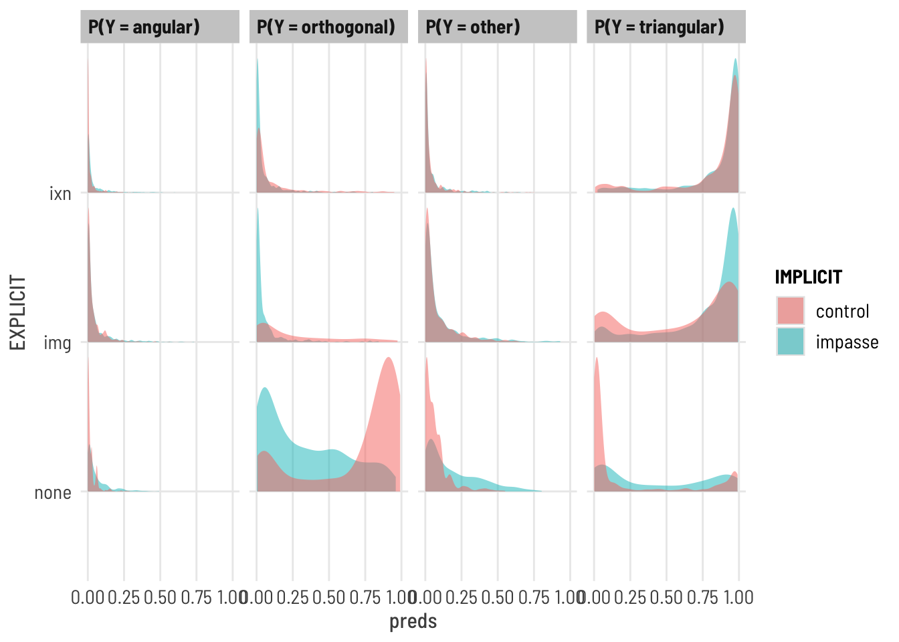

title ="Participants by Condition and Data Collection Period"cols =c("Control Condition","Impasse Condition", "Control+Img", "Impasse + Img", "Control + IXN", "Impasse + IXN", "Total for Period")cont <-table(df_subjects$term, df_subjects$pretty_condition)cont %>%addmargins() %>%kbl(caption = title, col.names = cols) %>%kable_classic()
Participants by Condition and Data Collection Period
Control Condition
Impasse Condition
Control+Img
Impasse + Img
Control + IXN
Impasse + IXN
Total for Period
fall17
27
27
30
30
30
30
174
spring18
35
37
15
0
29
0
116
fall21
0
0
5
12
3
11
31
summer22
0
0
12
20
0
20
52
Sum
62
64
62
62
62
61
373
CODE
table(df_subjects$IMPLICIT, df_subjects$EXPLICIT)
none img ixn
control 62 62 62
impasse 64 62 61
Participants
CODE
#Describe participantssubject.stats <-df_subjects %>% dplyr::select(age) %>%unlist() %>%favstats()subject.stats$percent.male <- ((df_subjects %>%filter(gender=="Male") %>%count())/count(df_subjects))$nsubject.stats$percent.female <- ((df_subjects %>%filter(gender=="Female") %>%count())/count(df_subjects))$nsubject.stats$percent.other <- ((df_subjects %>%filter(gender %nin%c("Female","Male")) %>%count())/count(df_subjects))$ntitle ="Descriptive Statistics of Participant Age and Gender"subject.stats %>%kbl (caption = title) %>%kable_classic()%>%footnote(general ="Age in Years", general_title ="Note: ",footnote_as_chunk = T)
Descriptive Statistics of Participant Age and Gender
min
Q1
median
Q3
max
mean
sd
n
missing
percent.male
percent.female
percent.other
18
19
20
21
66
21.6
5.55
373
0
0.389
0.595
0.016
Note: Age in Years
Overall 373 participants (39 % male, 60 % female, 2 % other) undergraduate STEM majors at a public American University participated in exchange for course credit (age: 18 - 66 years).
H1A | OVERALL ACCURACY
Research Question
Do Ss in the IMPASSE condition score higher across the entire task than those in the CONTROL group?
Hypothesis
(H1) Participants in the IMPASSE condition will be more likely to correctly interpret the graph than those in the CONTROL condition.
Data
data: df_items where q nin 6,9 (the 13 discriminating Qs ), df_subjects
[subject level]: accuracy (number of test phase qs correct from total s_NABS)
predictor: condition [between-subjects factor]
Analysis Strategy
Wilcoxon-Rank Sum (Mann-Whitney) test on subject-level total accuracy of test phase (s_NABS)
Mixed Logistic Regression accuracy ~ condition + (1 | subject ) + (1 | question)
model effect of condition on probability of correct response [during test phase] while accounting for subject (and item-level?) effects
Alternatives
Ordinal Mixed Logistic Regression on scaled_score
OLS Linear Regression: bimodal distribution at tails makes the mean a poor predictor; LMs violate assumptions of normally distributed residuals; both absolute and scaled scores yield non-normal residuals; no transformation of the outcome variables yield normal residuals
Notes
Also exploring:
Hurdle model (mixture model w/ binomial + [poisson or negbinom count; 0s from 1 DGP)
Zero Inflated model (mixture model w/ binomial + poisson or negbinom count; 0s from 2 DGPs)
Beta regression hurdle model? (mixture with location and scale parameters [mean, variance] and hurdles for floor and ceiling effects)
# # ggplot(data = df_s, aes( x = pretty_condition, y = task_percent)) + # ggdist::stat_halfeye(# alpha = 0.7,# point_colour = NA,# adjust = .5,# width = .5, .width = 0,# justification = -.5) +# geom_boxplot(# alpha = 0.1,# width = .2,# outlier.shape = NA# ) +# geom_point(# size = 2,# alpha = .5,# position = position_jitter(# seed = 1, width = .05, height = .02# )# ) # coord_flip() + theme_clean() + theme(legend.position = "blank")# p$layers[[3]]=NULL #remove default boxplot# e <- statsExpressions::two_sample_test(y = task_percent, x = pretty_condition, data = df_s,# type = "nonparametric", alternative = "less",# var.equal = FALSE)# #labels are layer 4# p + labs(title = "Distribution of Total Accuracy",# y = "Proportion of correct responses across task", x = "",# subtitle = "Impasse condition yields higher scores and greater variance",# caption=e$expression[[1]])
Describe
CODE
title ="Descriptive Statistics of Response Accuracy (Total % Correct)"tbl1 <- mosaic::favstats(~task_percent, data = df_s) tbl1 %>%kbl (caption = title) %>%kable_classic()
Descriptive Statistics of Response Accuracy (Total % Correct)
min
Q1
median
Q3
max
mean
sd
n
missing
0
0.154
0.846
0.923
1
0.614
0.397
373
0
CODE
title ="Descriptive Statistics of Response Accuracy (Total % Correct) BY CONDITION"tbl2 <- mosaic::favstats(task_percent ~ pretty_condition, data = df_s) tbl2 %>%kbl (caption = title) %>%kable_classic()
Descriptive Statistics of Response Accuracy (Total % Correct) BY CONDITION
pretty_condition
min
Q1
median
Q3
max
mean
sd
n
missing
none-control
0.000
0.000
0.000
0.154
1
0.211
0.370
62
0
none-impasse
0.000
0.058
0.346
0.846
1
0.425
0.389
64
0
img-control
0.000
0.308
0.769
0.923
1
0.620
0.371
62
0
img-impasse
0.000
0.635
0.923
0.923
1
0.777
0.278
62
0
ixv-control
0.000
0.769
0.923
1.000
1
0.819
0.273
62
0
ixv-impasse
0.077
0.846
0.923
1.000
1
0.841
0.238
61
0
Across conditions, overall accuracy on the task ranges from 0 to 100 with a mean of 61.394. We see that the distribution of this outcome variable is clearly bimodal: with modes near the floor (0% correct) and ceiling (100% correct) of the scale. This bimodality is sensical considering the nature of the task, where each item in the task indexes a different information extraction operation over the same coordinate system.
A score of 100% indicates that the participant correctly interpreted the interval-coordinate system throughout the task, starting at the first question. A score of 0% indicates the individual never correctly interpreted the coordinate system. A score somewhere inbetween indicates that an individual deciphered the coordinate system sometime over the course the task.
TESTS
Aligned Ranks Transformation
CODE
m.art =art(task_percent ~ IMPLICIT*EXPLICIT, data = df_s)anova(m.art)
Analysis of Variance of Aligned Rank Transformed Data
Table Type: Anova Table (Type III tests)
Model: No Repeated Measures (lm)
Response: art(task_percent)
Df Df.res F value Pr(>F)
1 IMPLICIT 1 367 17.6390 3e-05 ***
2 EXPLICIT 2 367 71.3269 <2e-16 ***
3 IMPLICIT:EXPLICIT 2 367 5.8892 0.003 **
---
Signif. codes: 0 '***' 0.001 '**' 0.01 '*' 0.05 '.' 0.1 ' ' 1
Kruskal-Wallis rank sum test
data: df_s$task_percent by df_s$pretty_condition
Kruskal-Wallis chi-squared = 107, df = 5, p-value <2e-16
Visualize
CODE
#:::::::: STATSPLOT | VIOLINgrouped_ggbetweenstats(y = task_percent, x = EXPLICIT, grouping.var = IMPLICIT, data = df_s, type ="nonparametric")
CODE
grouped_ggbetweenstats(y = task_percent, x = IMPLICIT, grouping.var = EXPLICIT, data = df_s, type ="nonparametric")
MIXED LOGISTIC REGRESSION
Fit a mixed logistic regression (at the item level), predicting accuracy (absolute score) on all discriminating questions by condition; accounting for random effects of subject and item.
#confirm all factors is.factor(df_i$q) &&is.factor(df_i$subject) &&is.factor(df_i$pretty_condition) &&is.factor(df_i$accuracy) &&is.factor(df_i$ospan_split)
[1] FALSE
CODE
## 1 | SETUP RANDOM INTERCEPT SUBJECT#:: EMPTY MODEL (baseline, no random effect)print("Empty fixed model")
[1] "Empty fixed model"
CODE
m0 =glm(accuracy ~1, family ="binomial", data = df_i) # summary(m0)#:: RANDOM INTERCEPT SUBJECTprint("Subject intercept random model")
[1] "Subject intercept random model"
CODE
mm.rS <-glmer(accuracy ~ (1|subject), data = df_i, family ="binomial")# summary(mm.rS)# :: TEST random effectpaste("AIC decreases w/ new model?", m0$aic >AIC(logLik(mm.rS)))
[1] "AIC decreases w/ new model? TRUE"
CODE
test_lrt(m0,mm.rS) #same as anova(m0, m1, test = "Chi")
# Likelihood-Ratio-Test (LRT) for Model Comparison (ML-estimator)
Name | Model | df | df_diff | Chi2 | p
--------------------------------------------------
m0 | glm | 1 | | |
mm.rS | glmerMod | 2 | 1 | 2794.94 | < .001
CODE
paste("Likelihood Ratio test is significant? p = ",(test_lrt(m0,mm.rS))$p[2])
[1] "Likelihood Ratio test is significant? p = 0"
CODE
#:: RANDOM INTERCEPT SUBJECT + ITEMprint("Subject Intercept + Item intercept random model")
[1] "Subject Intercept + Item intercept random model"
CODE
mm.rSQ <-glmer(accuracy ~ (1|subject) + (1|q), data = df_i, family ="binomial")#summary(mm.rSQ)# :: TEST random effectpaste("AIC decreases w/ new model?", AIC(logLik(mm.rS)) >AIC(logLik(mm.rSQ)))
[1] "AIC decreases w/ new model? TRUE"
CODE
test_lrt(mm.rS, mm.rSQ) #same as anova(m0, m1, test = "Chi")
Some of the nested models seem to be identical and probably only vary in
their random effects.
# Likelihood-Ratio-Test (LRT) for Model Comparison (ML-estimator)
Name | Model | df | df_diff | Chi2 | p
--------------------------------------------------
mm.rS | glmerMod | 2 | | |
mm.rSQ | glmerMod | 3 | 1 | 216.39 | < .001
CODE
paste("Likelihood Ratio test is significant? p = ",(test_lrt(mm.rS, mm.rSQ))$p[2])
Some of the nested models seem to be identical and probably only vary in
their random effects.
[1] "Likelihood Ratio test is significant? p = 5.55558295248529e-49"
CODE
## 2 | ADD MAIN EFFECTS print("MAIN FIXED implicit*explicit + Subject & Item random intercepts")
[1] "MAIN FIXED implicit*explicit + Subject & Item random intercepts"
CODE
mm.IErSQ <-glmer(accuracy ~ IMPLICIT + EXPLICIT + (1|subject) + (1|q) ,data = df_i, family ="binomial")# car::Anova(mm.IErSQ, type = 3)paste("AIC decreases w/ new model", AIC(logLik(mm.rSQ)) >AIC(logLik(mm.IErSQ)) )
[1] "AIC decreases w/ new model TRUE"
CODE
test_lrt(mm.rSQ,mm.IErSQ) #same as anova(m0, m1, test = "Chi")
# Likelihood-Ratio-Test (LRT) for Model Comparison (ML-estimator)
Name | Model | df | df_diff | Chi2 | p
----------------------------------------------------
mm.rSQ | glmerMod | 3 | | |
mm.IErSQ | glmerMod | 6 | 3 | 153.73 | < .001
CODE
paste("Likelihood Ratio test is significant? p = ",(test_lrt(mm.rSQ,mm.IErSQ))$p[2])
[1] "Likelihood Ratio test is significant? p = 4.1389548127204e-33"
#ONLY FOR BAYESIAN VERSION# result <- rope(m)# plot(result)# # result <- pd(m)# plot(result)## | PLOT PREDICTIONS#SJPLOT | MODEL | PROBABILITIESplot_model(m, type="int",show.intercept =TRUE,show.values =TRUE,title ="Model Prediction | Probability of Accurate Response",axis.title =c("Condition","Probability of Accurate Response"))
CODE
#PLOT MODEL PREDICTIONplot_model(m, type ="pred")
$IMPLICIT
$EXPLICIT
CODE
plot_model(m, type ="eff")
$IMPLICIT
$EXPLICIT
CODE
# ylim(0,1) + # labs(# title = "Model Prediction | Probability of Accurate Response",# subtitle = "Impasse increases Probability of Correct Response"# )#TODO EMMEANS for the estimated marginal means OR USE IXN PLOT
Do Ss in the IMPASSE condition offer less-orthogonal interpretations across the test phase questions?
While absolute accuracy score tells us whether a participant successfully interpreted the coordinate system, it doesn’t allow us to differentiate between different kinds of incorrect interpretations. Here we examine the (categorical) interpretation state type based on the nature of subject’s response, and determine if these interpretations differ by experimental condition. State is a 3-category variable that groups the following interpretations:
“orthogonal†[reference category] includes orthogonal and satisficing responses ==> indicates a primarily orthogonal state of coordinate system understanding
“other†includes: blank, reference point, responses that can’t be classified (including selecting all datapoints), => indicates an uncertain or unidentifiable state of coordinate system understanding, but one that is distinctly not orthogonal nor triangular
“angular†includes ‘lines connecting’ responses as well as responses that include both orthogonal and triangular answers => indicates some degree of angular/triangular coordinate understanding
“triangular†includes correct triangular and ‘lines connecting’ responses as well as responses that include both orthogonal and triangular answers => indicates some degree of angular/triangular coordinate understanding
Research Question
Does Ss in the impasse condition produce less orthogonal responses across questions?
Hypothesis
H1A | Ss in the IMPASSE condition will have a higher likelihood of producing unknown and triangle-like response states across all items
Data
data: df_items where q nin 6,9 (13 discriminant test phase items)
outcome: state ( 3 level factor from high_interpretation )
predictor: condition [between-subjects factor]
Analysis Strategy
MIXED Multinomial (Logistic) Regression on state predicted by condition
Alternative:
MIXED Ordinal regression on state (doesn’t meet proportional odds assumption-I think)
MIXED Multinomial or Ordinal regression on high_interpretation (some cells are 0, produces problems)
#::::::::::::DESCRIPTIVEStable(df_i$state, df_i$pretty_condition) %>%addmargins(2) %>%#display sum for rowprop.table(margin=2) %>%#return proportion (of column)addmargins(1) #sanity check sum of columns
(t <-table(df_i$state, df_i$EXPLICIT, df_i$IMPLICIT) %>%addmargins(2) %>%#display sum for rowaddmargins(1)) #sanity check sum of columns
, , = control
none img ixn Sum
orthogonal 561 204 91 856
other 55 68 37 160
angular 20 33 18 71
triangular 170 501 660 1331
Sum 806 806 806 2418
, , = impasse
none img ixn Sum
orthogonal 273 50 47 370
other 153 84 41 278
angular 52 43 36 131
triangular 354 629 669 1652
Sum 832 806 793 2431
MIXED MULTINOMIAL REGRESSION
Does condition affect the response state of of items across the task?
Fit a MIXED logistic regression predicting interpretation state (k=3) by condition(k = 2).
Fit Model [brms]
CODE
# to set priors... create model with default priors# then run prior_summary to see what the defaults are and syntax for coefficients# prior_summary(flat)# then create lists with the new priors, and create a new model with the priors inf_priors <-c(#prior on INTERCEPTS #25% chance of each answer in control, scale = from 0.01 to 62%prior(normal(-1.1, 1.5), class ="Intercept", dpar ="muangular"),prior(normal(-1.1, 1.5), class ="Intercept", dpar ="muother"),prior(normal(-1.1, 1.5), class ="Intercept", dpar ="mutriangular"),#prior on CONDITION COEFFICIENT#likely to change odds between 0 and 2.4prior(normal(0, 2.42), class = b, coef="pretty_conditionimgMcontrol", dpar ="muother"),prior(normal(0, 2.42), class = b, coef="pretty_conditionimgMimpasse", dpar ="muother"),prior(normal(0, 2.42), class = b, coef="pretty_conditionixvMcontrol", dpar ="muother"),prior(normal(0, 2.42), class = b, coef="pretty_conditionixvMimpasse", dpar ="muother"),prior(normal(0, 2.42), class = b, coef="pretty_conditionnoneMimpasse", dpar ="muother"),prior(normal(0, 2.42), class = b, coef="pretty_conditionimgMcontrol", dpar ="muangular"),prior(normal(0, 2.42), class = b, coef="pretty_conditionimgMimpasse", dpar ="muangular"),prior(normal(0, 2.42), class = b, coef="pretty_conditionixvMcontrol", dpar ="muangular"),prior(normal(0, 2.42), class = b, coef="pretty_conditionixvMimpasse", dpar ="muangular"),prior(normal(0, 2.42), class = b, coef="pretty_conditionnoneMimpasse", dpar ="muangular"),prior(normal(0, 2.42), class = b, coef="pretty_conditionimgMcontrol", dpar ="mutriangular"),prior(normal(0, 2.42), class = b, coef="pretty_conditionimgMimpasse", dpar ="mutriangular"),prior(normal(0, 2.42), class = b, coef="pretty_conditionixvMcontrol", dpar ="mutriangular"),prior(normal(0, 2.42), class = b, coef="pretty_conditionixvMimpasse", dpar ="mutriangular"),prior(normal(0, 2.42), class = b, coef="pretty_conditionnoneMimpasse", dpar ="mutriangular"))me_priors <-c(#prior on INTERCEPTS #25% chance of each answer in control, scale = from 0.01 to 62%prior(normal(-1.1, 1.5), class ="Intercept", dpar ="muangular"),prior(normal(-1.1, 1.5), class ="Intercept", dpar ="muother"),prior(normal(-1.1, 1.5), class ="Intercept", dpar ="mutriangular"),#prior on IMPLICIT COEFFICIENT#likely to change odds between 0 and 2.4prior(normal(0, 2.42), class = b, coef="IMPLICITimpasse", dpar ="muangular"),prior(normal(0, 2.42), class = b, coef="IMPLICITimpasse", dpar ="muother"),prior(normal(0, 2.42), class = b, coef="IMPLICITimpasse", dpar ="mutriangular"),#prior on EXPLICIT COEFFICIENT#likely to change odds between 0 and 2.4prior(normal(0, 2.42), class = b, coef="EXPLICITimg", dpar ="muangular"),prior(normal(0, 2.42), class = b, coef="EXPLICITimg", dpar ="muother"),prior(normal(0, 2.42), class = b, coef="EXPLICITimg", dpar ="mutriangular"),prior(normal(0, 2.42), class = b, coef="EXPLICITixn", dpar ="muangular"),prior(normal(0, 2.42), class = b, coef="EXPLICITixn", dpar ="muother"),prior(normal(0, 2.42), class = b, coef="EXPLICITixn", dpar ="mutriangular"))ixn_priors <-c(#prior on INTERCEPTS #25% chance of each answer in control, scale = from 0.01 to 62%prior(normal(-1.1, 1.5), class ="Intercept", dpar ="muangular"),prior(normal(-1.1, 1.5), class ="Intercept", dpar ="muother"),prior(normal(-1.1, 1.5), class ="Intercept", dpar ="mutriangular"),#prior on IMPLICIT COEFFICIENT#likely to change odds between 0 and 2.4prior(normal(0, 2.42), class = b, coef="IMPLICITimpasse", dpar ="muangular"),prior(normal(0, 2.42), class = b, coef="IMPLICITimpasse", dpar ="muother"),prior(normal(0, 2.42), class = b, coef="IMPLICITimpasse", dpar ="mutriangular"),#prior on EXPLICIT COEFFICIENT#likely to change odds between 0 and 2.4prior(normal(0, 2.42), class = b, coef="EXPLICITimg", dpar ="muangular"),prior(normal(0, 2.42), class = b, coef="EXPLICITimg", dpar ="muother"),prior(normal(0, 2.42), class = b, coef="EXPLICITimg", dpar ="mutriangular"),prior(normal(0, 2.42), class = b, coef="EXPLICITixn", dpar ="muangular"),prior(normal(0, 2.42), class = b, coef="EXPLICITixn", dpar ="muother"),prior(normal(0, 2.42), class = b, coef="EXPLICITixn", dpar ="mutriangular"),#prior on IXN COEFFICIENT#likely to change odds between 0 and 2.4prior(normal(0, 2.42), class = b, coef="IMPLICITimpasse:EXPLICITimg", dpar ="muangular"),prior(normal(0, 2.42), class = b, coef="IMPLICITimpasse:EXPLICITimg", dpar ="muother"),prior(normal(0, 2.42), class = b, coef="IMPLICITimpasse:EXPLICITimg", dpar ="mutriangular"),prior(normal(0, 2.42), class = b, coef="IMPLICITimpasse:EXPLICITixn", dpar ="muangular"),prior(normal(0, 2.42), class = b, coef="IMPLICITimpasse:EXPLICITixn", dpar ="muother"),prior(normal(0, 2.42), class = b, coef="IMPLICITimpasse:EXPLICITixn", dpar ="mutriangular"))#BAYESIAN RANDOM ONLYBmm.cat.rSQ <-brm( state ~1+ (1|subject) + (1|q), data = df_i, family ="categorical",chains =4, iter =2500, warmup =1000,cores =4, seed =1234,save_pars =save_pars(all =TRUE),# backend = "cmdstanr",file ="analysis/SGC3B/models/sgc3b_brms_state_Bmm.cat.rSQ.rds")# CONDITION (unravelled, not fatorial) EQUAL ONLY MODELBmm.cat.CrSQ <-brm( state ~ pretty_condition + (1|subject) + (1|q), data = df_i, prior = inf_priors,family ="categorical",chains =4, iter =2000, warmup =1000,cores =4, seed =1234,save_pars =save_pars(all =TRUE),control =list(adapt_delta =0.98), # to deal with divergent transitionsbackend ="cmdstanr",file ="analysis/SGC3B/models/sgc3b_brms_state_Bmm.cat.CrSQ.rds")##MODEL COMPARISON# print("MODEL COMPARISON: random effects (vs) CONDITION")# bayesfactor(Bmm.cat.rSQ, Bmm.cat.CrSQ)#substantial evidence in favor of conditon model over random only BF 1.64e+16# CONDITION * OSPAN MODELBmm.cat.IErSQ <-brm( state ~ IMPLICIT + EXPLICIT + (1|subject) + (1|q), data = df_i, prior = me_priors,family ="categorical",chains =4, iter =2000, warmup =1000,cores =4, seed =1234,save_pars =save_pars(all =TRUE),control =list(adapt_delta =0.98), # to deal with divergent transitions# backend = "cmdstanr",file ="analysis/SGC3B/models/sgc3b_brms_state_Bmm.cat.IErSQ.rds")# CONDITION * OSPAN MODELBmm.cat.I.ErSQ <-brm( state ~ IMPLICIT*EXPLICIT + (1|subject) + (1|q), data = df_i, prior = ixn_priors,family ="categorical",chains =4, iter =2500, warmup =1000,cores =4, seed =1234,save_pars =save_pars(all =TRUE),control =list(adapt_delta =0.98), # to deal with divergent transitions# backend = "cmdstanr",file ="analysis/SGC3B/models/sgc3b_brms_state_Bmm.cat.I.ErSQ.rds")##MODEL COMPARISONprint("IS FACTORIAL better than MAIN EFFECTS model?")
[1] "IS FACTORIAL better than MAIN EFFECTS model?"
CODE
bayesfactor(Bmm.cat.I.ErSQ, Bmm.cat.IErSQ)
Warning: Bayes factors might not be precise.
For precise Bayes factors, sampling at least 40,000 posterior samples is recommended.
Computation of Bayes factors: estimating marginal likelihood, please wait...
Warning: logml could not be estimated within maxiter, rerunning with adjusted starting value.
Estimate might be more variable than usual.
Warning: logml could not be estimated within maxiter, rerunning with adjusted starting value.
Estimate might be more variable than usual.
Possible multicollinearity between b_muangular_IMPLICITimpasse:EXPLICITixn and b_muangular_EXPLICITixn (r = 0.72). This might lead to inappropriate results. See 'Details' in '?rope'.
Possible multicollinearity between b_muangular_IMPLICITimpasse:EXPLICITixn and b_muangular_EXPLICITixn (r = 0.72). This might lead to inappropriate results. See 'Details' in '?rope'.
Possible multicollinearity between b_muangular_IMPLICITimpasse:EXPLICITixn and b_muangular_EXPLICITixn (r = 0.72). This might lead to inappropriate results. See 'Details' in '?rope'.
Possible multicollinearity between b_muangular_IMPLICITimpasse:EXPLICITixn and b_muangular_EXPLICITixn (r = 0.72). This might lead to inappropriate results. See 'Details' in '?rope'.
Possible multicollinearity between b_muangular_IMPLICITimpasse:EXPLICITixn and b_muangular_EXPLICITixn (r = 0.72). This might lead to inappropriate results. See 'Details' in '?rope'.
Possible multicollinearity between b_muangular_IMPLICITimpasse:EXPLICITixn and b_muangular_EXPLICITixn (r = 0.72). This might lead to inappropriate results. See 'Details' in '?rope'.
Possible multicollinearity between b_muangular_IMPLICITimpasse:EXPLICITixn and b_muangular_EXPLICITixn (r = 0.72). This might lead to inappropriate results. See 'Details' in '?equivalence_test'.
Possible multicollinearity between b_muangular_IMPLICITimpasse:EXPLICITixn and b_muangular_EXPLICITixn (r = 0.72). This might lead to inappropriate results. See 'Details' in '?rope'.
CODE
plot(result)
CODE
result <-pd(m) plot(result)
CODE
## | PLOT PREDICTIONS#SJPLOT | MODEL | PROBABILITIESplot_model(m, type="int",show.intercept =TRUE,show.values =TRUE,title ="Model Prediction | Probability of Accurate Response",axis.title =c("Condition","Probability of Accurate Response"))
Note: uncertainty of error terms are not taken into account. You may want to use `rstantools::posterior_predict()`.
CODE
#PLOT MODEL PREDICTION# plot_model(m, type = "pred") # plot_model(m, type = "eff") # ylim(0,1) + # labs(# title = "Model Prediction | Probability of Accurate Response",# subtitle = "Impasse increases Probability of Correct Response"# )
CODE
#::::: GGDIST POSTERIOR PROBABILITY OF RESPONSE##WORKING# https://mjskay.github.io/ggdist/reference/stat_slab.html## VIS probability of correct response#TAKES A REALLY LONG TIME#1 | get draws# draws <- df_i %>%# data_grid(pretty_condition, ospan_split, subject, q) %>%# add_epred_draws(m,# # ndraws = 100, # n = 100,# # dpar = TRUE,# transform = TRUE, #gives prob%, otherwise OR# re_formula = NA)# draws %>% write_rds(file = "analysis/SGC3A/models/draws/draws_Bmm.catCOrSQ_OPSAN.rds")#OR load from file# draws <- read_rds(file = "analysis/SGC3A/models/draws/draws_Bmm.catCOrSQ_OPSAN.rds")#2| VISUALIZE PREDICTIONS | GGDIST##TODO figure out height normalization.##do it with much smaller number of draws #TODO adjust bandwidth/smoothing? + put on same line + #TAKES A REAAALY LONG TIME# d <- # d <- draws %>% sample_n(10) %>% # ggplot(aes(x = .epred, y = pretty_condition, fill = ospan_split)) +# stat_slab(width = c(.95), alpha = 0.5, normalize="xy") +# facet_wrap(~.category) +# # #normalize = all, panels, xy, groups, none# xlim(0,1) + labs(# title = "Model Predicted Probability of Correct Response",# x = "probability of correct response",# y = "Interpretation"# ) + theme_clean() #+ ggeasy::easy_remove_legend() + ggeasy::easy_remove_y_axis()# # # #TO PLOT ON THE SAME LINE, INCLUDE Y = 0 in aes and ggeasy::remove_y_axis()# # # # # # ggsave(d, filename = "figures/sgc3a_BBm.cat.CrSQ_lab_posterior.svg", width = 6, height =4)# d#USING PREDSpreds %>%ggplot(aes (x = preds, y = EXPLICIT, fill = IMPLICIT)) +stat_slab( normalize ="xy", alpha =0.5) +facet_grid(~ state)

CODE
#DISPLAY MODEL AS TABLEtab_model(m)
'bayes_R2' is not defined for unordered categorical models.
#::::::::::::DESCRIPTIVESpaste("Proportions of Correct Responses by Condition")
[1] "Proportions of Correct Responses by Condition"
CODE
table(df$accuracy, df$pretty_condition) %>%addmargins(2) %>%#display sum for rowprop.table(margin=2) %>%#return proportion (of column)addmargins(1) #sanity check sum of columns
table(df$accuracy, df$IMPLICIT, df$EXPLICIT) %>%addmargins(2) %>%#display sum for rowaddmargins(1) #sanity check sum of columns
, , = none
control impasse Sum
incorrect 52 45 97
correct 10 19 29
Sum 62 64 126
, , = img
control impasse Sum
incorrect 42 23 65
correct 20 39 59
Sum 62 62 124
, , = ixn
control impasse Sum
incorrect 22 15 37
correct 40 46 86
Sum 62 61 123
TESTS
CODE
#CHI SQUARE ON ACCURACY X OSPAN-SPLIT in LOW WORKING MEMORY# df_low <- df %>% filter(ospan_split == "low-memory")# # table(df_low$pretty_condition, df_low$accuracy)# chisq.test( x = df_low$pretty_condition, y = df_low$accuracy, correct = TRUE)# # #CHI SQUARE ON ACCURACY X OSPAN-SPLIT in HIGH WORKING MEMORY# df_high <- df %>% filter(ospan_split == "high-memory")# #table(df_high$pretty_condition, df_high$accuracy)# chisq.test( x = df_high$pretty_condition, y = df_high$accuracy,correct = TRUE)# #significant if correct = FALSE
CODE
# INTERACTION (IMPLICIT (VS) EXPLICIT)grouped_ggbarstats( data = df, x = IMPLICIT, y = accuracy, grouping.var = EXPLICIT,type ="nonparametric")
CODE
# MAIN EFFECT CONDITION (yes)ggbarstats( data = df, x = accuracy, y = pretty_condition,type ="nonparametric")
CODE
# MAIN EFFECT OSPAN (none)# ggbarstats( data = df, x = accuracy, y = ospan_split, # type = "nonparametric")
LOGISTIC REGRESSION (MAIN EFFECT CONDITION)
Fit a logistic regression predicting accuracy (absolute score) (n = 373) by condition (k = 2).
Parameter estimate: \(\beta_{0}\) = Log Odds of (correct) responses in CONTROL condition
\(e^{\beta_{0}}\) = ODDS of correct response in CONTROL condition
Parameter estimate: \(\beta_{1}\) = \(\beta_{1impasse}\) Log Odds (Log OR; change in odds for correct response in impasse (vs) control [log scale])
\(e^{\beta_{1}}\) = ODDS RATIO of correct response in IMPASSE (vs) CONTROL
Null hypothesis:\(\beta_{impasse} \le 0\) the odds for a correct response does not change, or decreases
Alternative hypothesis:\(\beta_{impasse} \gt 0\) the odds of a correct response increases
Fit CONDITION Model
First, we fit a logistic regression with condition as predictor, and compare its fit to an empty (intercept-only) model.
CODE
# MODEL FITTING ::::::::#: 1 EMPTY MODEL baseline glm model intercept onlym.0=glm(accuracy ~1, data = df, family ="binomial")# print("EMPTY MODEL")# summary(m0)#: 2 CONDITION modelm.C <-glm( accuracy ~ pretty_condition, data = df, family ="binomial")# print("PREDICTOR MODEL")# summary(m1)#: 2 TEST SUPERIOR FITpaste("AIC wth predictor is lower than empty model?", m.0$aic > m.C$aic)
[1] "AIC wth predictor is lower than empty model? TRUE"
CODE
test_lrt(m.0,m.C) #same as anova(m0, m1, test = "Chi")
# Likelihood-Ratio-Test (LRT) for Model Comparison (ML-estimator)
Name | Model | df | df_diff | Chi2 | p
--------------------------------------------
m.0 | glm | 1 | | |
m.C | glm | 6 | 5 | 74.33 | < .001
CODE
paste("Likelihood Ratio test is significant? p = ",(test_lrt(m.0,m.C))$p[2])
[1] "Likelihood Ratio test is significant? p = 1.28060386240202e-14"
CODE
# summary(m.C)#: 4 FACTORIAL modelm.IE <-glm( accuracy ~ IMPLICIT*EXPLICIT, data = df, family ="binomial")# print("PREDICTOR MODEL")# summary(m.IE)# car::Anova(m.IE, type=3)#: 4 TEST SUPERIOR FITpaste("AIC with FACTORIAL lower than FLAT CONDITION only model?", m.C$aic > m.IE$aic)
[1] "AIC with FACTORIAL lower than FLAT CONDITION only model? TRUE"
CODE
#can't do lrt ... not nested models
Describe
CODE
#set modelm <- m.IE# DESCRIBE MODEL ::::::::::::::::::::::::::::::::::::: print("PREDICTOR MODEL [default two-tailed sig test]")
[1] "PREDICTOR MODEL [default two-tailed sig test]"
CODE
summary(m)
Call:
glm(formula = accuracy ~ IMPLICIT * EXPLICIT, family = "binomial",
data = df)
Deviance Residuals:
Min 1Q Median 3Q Max
-1.675 -0.883 -0.593 0.936 1.910
Coefficients:
Estimate Std. Error z value Pr(>|z|)
(Intercept) -1.649 0.345 -4.77 1.8e-06 ***
IMPLICITimpasse 0.786 0.441 1.79 0.074 .
EXPLICITimg 0.907 0.439 2.06 0.039 *
EXPLICITixn 2.246 0.436 5.16 2.5e-07 ***
IMPLICITimpasse:EXPLICITimg 0.484 0.581 0.83 0.405
IMPLICITimpasse:EXPLICITixn -0.264 0.594 -0.44 0.657
---
Signif. codes: 0 '***' 0.001 '**' 0.01 '*' 0.05 '.' 0.1 ' ' 1
(Dispersion parameter for binomial family taken to be 1)
Null deviance: 515.41 on 372 degrees of freedom
Residual deviance: 441.08 on 367 degrees of freedom
AIC: 453.1
Number of Fisher Scoring iterations: 4
# MANUAL ONE-SIDED SIGTEST ::::::::::::::::::::::::::: # one-sided (right tail) z test for B COEFFICIENT#https://stats.stackexchange.com/questions/330655/strategy-for-a-one-sided-test-of-glms-coefficients#SANITY CHECK 2-tailed test should match the model output# tt <- 2*pnorm(summary(m)$coefficients[2:4], lower.tail = F)# paste("p value for two-tailed test, null B = 0 : ",round(tt,3))# ot <- pnorm(summary(m)$coefficients[2:4], lower.tail = F)# paste("BUT we want a one tailed directional, null: B <= 0: ",round(ot,3))# paste("adjusted confint for directional hypothesis")# (dcint <- confint(m, level = 0.90)) # get 90% for right side))# # https://stats.stackexchange.com/questions/20734/is-a-1-sided-90-prediction-interval-equivalent-to-a-2-sided-95-prediction-inte#:::::::: INTERPRET COEFFICIENTS# print("Confidence Interval —- LOG ODDS")# confint(m1) #not adjusted for 1-tailed# print("Coefficients —- ODDS RATIOS")# (e <- cbind( exp(coef(m)), exp(confint(m)))) #exponentiated, not adjusted# (e <- cbind( exp(coef(m)), exp(dcint))) #exponentiated, adjusted#TODO INTERACTIONS & ESTIMATED MARGINAL MEANS # print("MODEL PREDICTIONS")# Retrieve predictions as probabilities # (for each level of the predictor)# pred.control <- predict(m,data.frame(pretty_condition="control"),type="response")#this should match : plogis(intercept coefficient)# paste("Probability of success in control,", pred.control)# pred.impasse <- predict(m,data.frame(pretty_condition="impasse"),type="response")#this should match : plogis(intercept coefficient + predictor coeff)# paste("Probability of success in impasse,", pred.impasse)
Inference
Visualize
CODE
## | PLOT PARAMETERS #SJPLOT | MODEL | ODDS RATIOplot_model(m, vline.color ="red", show.intercept =TRUE, show.values =TRUE,p.threshold =0.1, #manually adjust to account for directional testci.lvl =0.90 ) +#manually adjusted for directional test labs(title ="Model Estimate | Odds Ratio",subtitle ="",x ="Condition")
#ONLY FOR BAYESIAN VERSION# result <- rope(m)# plot(result)# # result <- pd(m)# plot(result)## | PLOT PREDICTIONS#SJPLOT | MODEL | PROBABILITIESplot_model(m, type="int",show.intercept =TRUE,show.values =TRUE,title ="Model Prediction | Probability of Accurate Response",axis.title =c("Condition","Probability of Accurate Response"))
CODE
#PLOT MODEL PREDICTIONplot_model(m, type ="pred")
$IMPLICIT
$EXPLICIT
CODE
plot_model(m, type ="eff")
$IMPLICIT
$EXPLICIT
CODE
# ylim(0,1) + # labs(# title = "Model Prediction | Probability of Accurate Response",# subtitle = "Impasse increases Probability of Correct Response"# )
“orthogonal†[reference category] includes orthogonal and satisficing responses ==> indicates a primarily orthogonal state of coordinate system understanding
“other†includes: blank, reference point, responses that can’t be classified (including selecting all datapoints), => indicates an uncertain or unidentifiable state of coordinate system understanding, but one that is distinctly not orthogonal nor triangular
“angular†includes ‘lines connecting’ responses as well as responses that include both orthogonal and triangular answers => indicates some degree of angular/triangular coordinate understanding
“triangular†includes correct triangular and ‘lines connecting’ responses as well as responses that include both orthogonal and triangular answers => indicates some degree of angular/triangular coordinate understanding
Research Question
Does Ss in the impasse condition produce less orthogonal responses on the first question?
Hypothesis
H1A | Ss in the IMPASSE condition will have a higher likelihood of producing unknown and and triangle-like response states, relative to orthogonal response states, on the first question
Data
data: df_items where q == 1
outcome: state ( 4 level factor from 5 level high_interpretation )
predictor: condition [between-subjects factor]
Analysis Strategy
Multinomial (Logistic) Regression on state predicted by condition
Alternative:
Ordinal regression on state; but model doesn’t satisfy proportional odds assumption (parallel slopes)
Multinomial or Ordinal regression on high_interpretation (5 category interpretation state which distinguishes between uncertain (blank, reference) unclassifiable, triangle-like and true triangular.) There are some cells with zeros, however (no uncertain responses in control) which means the model can’t accurately estimate those comparisons
#::::::::::::DESCRIPTIVEStable(df$state, df$pretty_condition) %>%addmargins(2) %>%#display sum for rowprop.table(margin=2) %>%#return proportion (of column)addmargins(1) #sanity check sum of columns
(t <-table(df$state, df$IMPLICIT, df$EXPLICIT) %>%addmargins(2) %>%#display sum for rowaddmargins(1)) #sanity check sum of columns
, , = none
control impasse Sum
orthogonal 50 20 70
other 0 18 18
angular 2 7 9
triangular 10 19 29
Sum 62 64 126
, , = img
control impasse Sum
orthogonal 40 8 48
other 1 9 10
angular 1 6 7
triangular 20 39 59
Sum 62 62 124
, , = ixn
control impasse Sum
orthogonal 16 5 21
other 0 1 1
angular 6 9 15
triangular 40 46 86
Sum 62 61 123
MULTINOMIAL REGRESSION
Does condition affect the response state of Q1?
Fit a logistic regression predicting interpretation state (k=3) by condition(k = 2).
3 equations will be estimated (# categories - 1); each representing the odds of answering in that particular interpretation (vs) the reference category (orthogonal answer) [essentially a series of binary logistic regressions, but instead of incorrect/correct, comparing [reference category] vs [this category])
For each equation:
\(\beta_{0}\)= Log Odds of [this category type vs. reference category type) response in CONTROL condition
\(e^{\beta_{0}}\)= ODDS of [this category type vs. reference category type] response in CONTROL condition
\(\beta_{1}\)=\(\beta_{1impasse}\)Log Odds (Log OR; change in odds for [this category] type response in impasse (vs) control [log scale])
\(e^{\beta_{1}}\)= ODDS RATIO of [this. vs reference category type] response in IMPASSE (vs) CONTROL
Two-tailed NHST Null hypothesis:\(\beta_{impasse} = 0\)the odds for [this category of response vs. reference] are not different for IMPASSE condition
Alternative hypothesis:\(\beta_{impasse} \ne 0\)the odds of [this category of response vs. reference] increases or decreases for IMPASSE condition
Fit CONDITION Model
CODE
#check reference level print("Categories (first is reference)")
[1] "Categories (first is reference)"
CODE
levels(df$state)
[1] "orthogonal" "other" "angular" "triangular"
CODE
#FIT EMPTY MODELprint("EMPTY MODEL")
[1] "EMPTY MODEL"
CODE
catm.0<-multinom(state ~1, data = df)
# weights: 8 (3 variable)
initial value 517.087797
final value 421.076070
converged
catm.C <-multinom(formula = state ~ pretty_condition, data = df, model =TRUE)
# weights: 28 (18 variable)
initial value 517.087797
iter 10 value 342.627778
iter 20 value 334.991914
iter 30 value 334.824433
final value 334.824100
converged
CODE
# summary(catm.C)#COMPARE MODEL FITpaste("AIC wth CONDITION predictor is lower than empty model?", catm.0$AIC > catm.C$AIC)
[1] "AIC wth CONDITION predictor is lower than empty model? TRUE"
CODE
test_lrt(catm.0, catm.C)
# Likelihood-Ratio-Test (LRT) for Model Comparison (ML-estimator)
Name | Model | df | df_diff | Chi2 | p
--------------------------------------------------
catm.0 | multinom | 3 | | |
catm.C | multinom | 18 | 15 | 172.50 | < .001
CODE
#FIT PREDICTOR MODELprint("FACTORIAL MODEL")
[1] "FACTORIAL MODEL"
CODE
catm.IE <-multinom(formula = state ~ IMPLICIT*EXPLICIT, data = df, model =TRUE)
# weights: 28 (18 variable)
initial value 517.087797
iter 10 value 338.418971
iter 20 value 334.948654
iter 30 value 334.824378
final value 334.824101
converged
CODE
# summary(catm.IE)# car::Anova(catm.IE)#COMPARE MODEL FITpaste("AIC wth FACTORIAL predictor is lower than empty model?", catm.IE$AIC > catm.0$AIC)
[1] "AIC wth FACTORIAL predictor is lower than empty model? FALSE"
CODE
test_lrt(catm.0, catm.IE)
# Likelihood-Ratio-Test (LRT) for Model Comparison (ML-estimator)
Name | Model | df | df_diff | Chi2 | p
---------------------------------------------------
catm.0 | multinom | 3 | | |
catm.IE | multinom | 18 | 15 | 172.50 | < .001
AIC in predictor model is less than empty model, and likelihood ratio test indicates predictor model is significantly better fit to the sample data than the empty (intercept only) model.
#:::::::: PLOT#SJPLOT | MODEL | ODDS RATIO#library(sjPlot)plot_model(m, type ="est",vline.color ="red", show.intercept =TRUE, show.values =TRUE,p.threshold =0.1, #manually adjust to account for directional testci.lvl =0.90 ) +#manually adjusted for directional test # scale_y_continuous() + #remove to put on log scale x axis # scale_x_discrete(labels=c("control","impasse"))+labs(title ="MODEL ESTIMATE | Q1 Accuracy ~ condition",subtitle ="Impasse increases odds of correct response on Q1",x ="Condition") +theme_clean()
CODE
#SJPLOT | MODEL | PROBABILITIESplot_model(m, type ="int")
CODE
plot_model(m, type="eff", ci.lvl =0.95)
$IMPLICIT
$EXPLICIT
CODE
# + ylim(0,1) +# labs(title = "MODEL PREDICTION | Q1 State ~ condition",# subtitle = "Impasse increases probability of more accurate response states Q1",# x = "Condition") + theme_clean()#TODO ESTIMAED MARGINALS AND IXN PLOTS # https://cran.r-project.org/web/packages/emmeans/vignettes/comparisons.html
#EXAMINE PREDICTIONS#create sample data frame# test <- data.frame(pretty_condition = c("control", "impasse"))# pred <- predict(m, newdata = test, "probs")# paste("Predicted Probability of Being in Each State")# ( x <- cbind(test, pred))# # print("MODEL PERFORMANCE")# performance(m)# DescTools::PseudoR2(m, which = c("McFadden", "CoxSnell", "Nagelkerke"))
EXPLORE specific question
CODE
# # df <- df_items %>% filter(q==10)# grouped_ggbarstats( data = df, x = accuracy, y = pretty_condition, grouping.var = ospan_split)
Source Code
---subtitle: 'Study SGC3B | (Impasse * Explicit) Hypothesis Testing'# YAML FOR generating modelsummary tables# uncomment to run those cells only # \usepackage{booktabs}# \usepackage{siunitx}# \newcolumntype{d}{S[input-symbols = ()]}---\newpage# SGC3B (Impasse * Explicit) Hypothesis Testing {#sec-SGC3B-hypotesting}*The purpose of this notebook is test the hypotheses that determined the design of the SGC3B factorial study.*```{r}#| label: SETUP#| warning : false#| message : false#UTILITIESlibrary(Hmisc) # %nin% operatorlibrary(broom) #tidy model outputlibrary(broom.mixed) #tidy mixed modelslibrary(mosaic) #favstatslibrary(svglite) #saving plots as svglibrary(distributional)#VISUALIZATION# library(ggpubr) #arrange plots# library(cowplot) #arrange shift function plotslibrary(ggformula) #easy graphs# # library(vcd) #mosaic plots# # library(vcdExtra) #mosaic plotslibrary(kableExtra) #printing tableslibrary(sjPlot) #visualize model coefficientslibrary(ggdist) #uncertainty vizlibrary(modelr) #needed for ggdistlibrary(gghalves) # plots. in halflibrary(ggbeeswarm) # violin plot stuffslibrary(statsExpressions)library(ggstatsplot) #plots with statslibrary(modelsummary) #latex tables for models!#MODELLINGlibrary(ARTool) #nonparametric anova# library(rstatix) #helpful testing functions incl wilcoxon, etclibrary(report) #easystats reportinglibrary(see) #easystats visualizationlibrary(performance) #easystats model diagnosticslibrary(parameters) #easystats model summary and vis# library(qqplotr) #confint on qq plot# library(gmodels) #contingency table and CHISQR# library(equatiomatic) #extract model equation# library(pscl) #zeroinfl / hurdle models library(lme4) #mixed effects modelslibrary(lmerTest) #for CIs in glmerlibrary(merTools) #predictInterval# library(ggeffects) #visualization log regr models#MULTINOMIAL library(nnet) #multinomial logistic regression [not mixed] #no p valueslibrary(mclogit) #frequentist mixed multinomial logistic regression [mblogit] #gives p values#BAYESIANlibrary(cmdstanr) #executing stanlibrary(brms) #bayesian mixed multinomials [+ other bayesian reg models]library(bayestestR) library(tidybayes)library(tidyverse) #ALL THE THINGS#OUTPUT OPTIONSlibrary(dplyr, warn.conflicts =FALSE)options(dplyr.summarise.inform =FALSE)options(ggplot2.summarise.inform =FALSE)options(scipen=1, digits=3)#GRAPH THEMEING# theme_set(theme_minimal()) # Custom ggplot theme to make pretty plots# Get the font at https://fonts.google.com/specimen/Barlow+Semi+Condensedtheme_clean <-function() {theme_minimal(base_family ="Barlow Semi Condensed") +theme(panel.grid.minor =element_blank(),plot.title =element_text(family ="BarlowSemiCondensed-Bold"),axis.title =element_text(family ="BarlowSemiCondensed-Medium"),strip.text =element_text(family ="BarlowSemiCondensed-Bold",size =rel(1), hjust =0),strip.background =element_rect(fill ="grey80", color =NA))}set_theme(base =theme_clean())```**TODO UPDATE Research Questions****Experimental Hypothesis**\**Null Hypothesis**\```{r}#| label: IMPORT-DATA#| warning : false#| message : false#IMPORT DATA df_subjects <-read_rds('analysis/SGC3B/data/2-scored-data/sgc3b_scored_participants.rds') %>%# filter(mode == "lab-synch") %>% #filter out online sgc3as mutate(task_percent = DV_percent_NABS) %>%droplevels()#SEPARATE OUT EXTRA ONLINE FROM SGC3Afactorial <- df_subjects %>%filter(condition %nin%c(111,121))mains <- df_subjects %>%filter(condition %in%c(111,121) & mode =="lab-synch")df_subjects <-rbind(factorial,mains) %>%mutate(EXPLICIT =as.factor(str_sub(condition, 1,1)),IMPLICIT =as.factor(str_sub(condition, 2,2)),EXPLICIT =recode_factor(EXPLICIT, "1"="none", "2"="img", "3"="ixn"),IMPLICIT =recode_factor(IMPLICIT, "1"="control", "2"="impasse") ) %>%mutate( pretty_condition =recode_factor(condition, "111"="none-control", "121"="none-impasse","211"="img-control", "221"="img-impasse","311"="ixv-control", "321"="ixv-impasse") ) df_items <-read_rds('analysis/SGC3B/data/2-scored-data/sgc3b_scored_items.rds') %>%mutate (q =as.factor(q), subject =as.factor(subject),accuracy =recode_factor(score_niceABS, "0"="incorrect","1"="correct"),# CODES TVERSKY AS TRI-LIKE# state = recode_factor(score_SCALED, #for ordinal# "-1" = "orth-like",# "-0.5" = "unknown",# "0" = "unknown",# "0.5" = "tri-like",# "1" = "tri-like"),# CODES TVERSKY AS OTHERstate =recode_factor(score_SCALED, #for ordinal"-1"="orthogonal","-0.5"="other","0"="other","0.5"="angular","1"="triangular"),state =as.ordered(state),EXPLICIT =as.factor(str_sub(condition, 1,1)),IMPLICIT =as.factor(str_sub(condition, 2,2)),EXPLICIT =recode_factor(EXPLICIT, "1"="none", "2"="img", "3"="ixn"),IMPLICIT =recode_factor(IMPLICIT, "1"="control", "2"="impasse")) %>%mutate( pretty_condition =recode_factor(condition, "111"="none-control", "121"="none-impasse","211"="img-control", "221"="img-impasse","311"="ixv-control", "321"="ixv-impasse") )```## SAMPLE### Data CollectionData was collected ... ```{r}#| label : DESC-DATA-COLLECTIONtitle ="Participants by Condition and Data Collection Period"cols =c("Control Condition","Impasse Condition", "Control+Img", "Impasse + Img", "Control + IXN", "Impasse + IXN", "Total for Period")cont <-table(df_subjects$term, df_subjects$pretty_condition)cont %>%addmargins() %>%kbl(caption = title, col.names = cols) %>%kable_classic()table(df_subjects$IMPLICIT, df_subjects$EXPLICIT)```### Participants```{r}#| label: DESC-PARTICIPANTS#Describe participantssubject.stats <-df_subjects %>% dplyr::select(age) %>%unlist() %>%favstats()subject.stats$percent.male <- ((df_subjects %>%filter(gender=="Male") %>%count())/count(df_subjects))$nsubject.stats$percent.female <- ((df_subjects %>%filter(gender=="Female") %>%count())/count(df_subjects))$nsubject.stats$percent.other <- ((df_subjects %>%filter(gender %nin%c("Female","Male")) %>%count())/count(df_subjects))$ntitle ="Descriptive Statistics of Participant Age and Gender"subject.stats %>%kbl (caption = title) %>%kable_classic()%>%footnote(general ="Age in Years", general_title ="Note: ",footnote_as_chunk = T) ```**Overall** `r subject.stats$n` participants (`r round((subject.stats$percent.male),2) * 100` % male, `r round((subject.stats$percent.female),2) * 100` % female, `r round((subject.stats$percent.other),2) * 100` % other) undergraduate STEM majors at a public American University participated in exchange for course credit (age: `r (subject.stats$min)` - `r (subject.stats$max)` years).## H1A \| OVERALL ACCURACY+-----------------------+------------------------------------------------------------------------------------------------------------------------------------------------------------------------------------------------------------------------------------------------------------------------------------+| Research Question | Do Ss in the IMPASSE condition score higher across the entire task than those in the CONTROL group? |+=======================+====================================================================================================================================================================================================================================================================================+| **Hypothesis** | (H1) Participants in the IMPASSE condition will be more likely to correctly interpret the graph than those in the CONTROL condition. |+-----------------------+------------------------------------------------------------------------------------------------------------------------------------------------------------------------------------------------------------------------------------------------------------------------------------+| **Data** | **data**: `df_items` where `q nin 6,9` (the 13 discriminating Qs ), `df_subjects` || | || | **outcome**: || | || | - \[at item level\] : *accuracy* ( factor(incorrect/correct) from `score_niceABS`\[absolute score\] || | - \[subject level\]: accuracy (number of test phase qs correct from total `s_NABS`) || | || | **predictor**: `condition`\[between-subjects factor\] |+-----------------------+------------------------------------------------------------------------------------------------------------------------------------------------------------------------------------------------------------------------------------------------------------------------------------+| **Analysis Strategy** | 1. Wilcoxon-Rank Sum (Mann-Whitney) test on subject-level total accuracy of test phase (`s_NABS`) || | 2. Mixed Logistic Regression\ || | `accuracy` \~ `condition` + (1 \| `subject` ) + (1 \| `question`)\ || | model effect of condition on probability of correct response \[during test phase\] while accounting for subject (and item-level?) effects |+-----------------------+------------------------------------------------------------------------------------------------------------------------------------------------------------------------------------------------------------------------------------------------------------------------------------+| **Alternatives** | - Ordinal Mixed Logistic Regression on `scaled_score` || | - OLS Linear Regression: bimodal distribution at tails makes the mean a poor predictor; LMs violate assumptions of normally distributed residuals; both absolute and scaled scores yield non-normal residuals; no transformation of the outcome variables yield normal residuals |+-----------------------+------------------------------------------------------------------------------------------------------------------------------------------------------------------------------------------------------------------------------------------------------------------------------------+| **Notes** | **Also exploring:** || | || | - Hurdle model (mixture model w/ binomial + \[poisson or negbinom count; 0s from 1 DGP) || | - Zero Inflated model (mixture model w/ binomial + poisson or negbinom count; 0s from 2 DGPs) || | - Beta regression hurdle model? (mixture with location and scale parameters \[mean, variance\] and hurdles for floor and ceiling effects) || | - Other way to account for the severe bimodality? |+-----------------------+------------------------------------------------------------------------------------------------------------------------------------------------------------------------------------------------------------------------------------------------------------------------------------+#### Setup```{r}#| label: SETUP-ACCdf_i = df_items %>%filter(q %nin%c(6,9)) %>% dplyr::select(pretty_condition, condition, accuracy, subject,q, IMPLICIT, EXPLICIT)df_s <- df_subjects %>% dplyr::select(pretty_condition, condition, task_percent, IMPLICIT, EXPLICIT)```#### Visualize```{r}#| label: DESC-ACC-FACTORIAL#:::::::: STACKED PROPORTIONAL BAR CHARTdf_i %>%ggplot(data = .,mapping =aes(x = IMPLICIT,fill = accuracy)) +geom_bar(position ="fill" ) +#,color = "black") +facet_grid(~EXPLICIT) +scale_fill_brewer(palette ="Set1") +labs(title ="Overall Accuracy",x ="Condition",fill ="",subtitle="Impasse Condition yields a greater proportion of correct responses for HIGH WM")#:::::::: STACKED BAR CHART BY QUESTIONdf_i %>%ggplot(data = .,mapping =aes(x = pretty_condition,fill = accuracy)) +geom_bar(position ="fill" ) +#,color = "black") +scale_fill_brewer(palette ="Set1") +facet_wrap(~ q ) +labs(title ="Accuracy by Question",x ="Condition",fill ="",subtitle="Q6 and Q9 are non-discriminative")#:::::::: FACETED HISTOGRAMstats = df_s %>%group_by(IMPLICIT, EXPLICIT) %>% dplyr::summarise(mean =mean(task_percent))gf_props(~task_percent,fill =~pretty_condition, data = df_s) %>%gf_facet_grid(IMPLICIT~EXPLICIT) %>%gf_vline(data = stats, xintercept =~mean, color ="red") +labs(x ="% Correct",y ="proportion of subjects",title ="Overall Absolute Score (% Correct)",subtitle ="") +theme(legend.position ="blank")``````{r}#TODO p <-grouped_ggbetweenstats(data = df_s,y = task_percent, x = IMPLICIT, grouping.var = EXPLICIT,plot.type ="box", type ="nonparametric", var.equal =FALSE,centrality.type ="parametric",package ="RColorBrewer",palette ="PRGn",centrality.point.args =list(color="black", size =3, shape =1),# point.args = list(alpha=0), #suppress pointsggplot.component =## modify further with `{ggplot2}` functionslist(# aes(color = IMPLICIT, fill = IMPLICIT),# scale_colour_manual(values = paletteer::paletteer_c("viridis::viridis", 3)),# scale_fill_manual(values = paletteer::paletteer_c("viridis::viridis", 3))# theme(axis.text.x = element_text(angle = 90) )) p[[1]] +coord_flip() + p[[2]] +coord_flip() + p[[3]] +coord_flip()# # ggplot(data = df_s, aes( x = pretty_condition, y = task_percent)) + # ggdist::stat_halfeye(# alpha = 0.7,# point_colour = NA,# adjust = .5,# width = .5, .width = 0,# justification = -.5) +# geom_boxplot(# alpha = 0.1,# width = .2,# outlier.shape = NA# ) +# geom_point(# size = 2,# alpha = .5,# position = position_jitter(# seed = 1, width = .05, height = .02# )# ) # coord_flip() + theme_clean() + theme(legend.position = "blank")# p$layers[[3]]=NULL #remove default boxplot# e <- statsExpressions::two_sample_test(y = task_percent, x = pretty_condition, data = df_s,# type = "nonparametric", alternative = "less",# var.equal = FALSE)# #labels are layer 4# p + labs(title = "Distribution of Total Accuracy",# y = "Proportion of correct responses across task", x = "",# subtitle = "Impasse condition yields higher scores and greater variance",# caption=e$expression[[1]])```### Describe```{r}#| label: DESC2-ACCtitle ="Descriptive Statistics of Response Accuracy (Total % Correct)"tbl1 <- mosaic::favstats(~task_percent, data = df_s) tbl1 %>%kbl (caption = title) %>%kable_classic()title ="Descriptive Statistics of Response Accuracy (Total % Correct) BY CONDITION"tbl2 <- mosaic::favstats(task_percent ~ pretty_condition, data = df_s) tbl2 %>%kbl (caption = title) %>%kable_classic()```Across conditions, overall accuracy on the task ranges from `r tbl1$min *100` to `r tbl1$max *100` with a mean of `r tbl1$mean * 100`. We see that the distribution of this outcome variable is clearly bimodal: with modes near the floor (0% correct) and ceiling (100% correct) of the scale. This bimodality is sensical considering the nature of the task, where each item in the task indexes a different information extraction operation over the same coordinate system.A score of 100% indicates that the participant correctly interpreted the interval-coordinate system throughout the task, *starting at the first question*. A score of 0% indicates the individual *never* correctly interpreted the coordinate system. A score somewhere inbetween indicates that an individual deciphered the coordinate system *sometime over the course the task*.#### TESTS##### Aligned Ranks Transformation<!-- https://rcompanion.org/handbook/F_16.html -->```{r}m.art =art(task_percent ~ IMPLICIT*EXPLICIT, data = df_s)anova(m.art)```##### Kruskal Wallis Test```{r}#| label: TEST-ACC(k <-kruskal.test(df_s$task_percent ~ df_s$pretty_condition))```##### Visualize```{r}#| label: TEST-VIZ-ACC#:::::::: STATSPLOT | VIOLINgrouped_ggbetweenstats(y = task_percent, x = EXPLICIT, grouping.var = IMPLICIT, data = df_s, type ="nonparametric")grouped_ggbetweenstats(y = task_percent, x = IMPLICIT, grouping.var = EXPLICIT, data = df_s, type ="nonparametric")```#### MIXED LOGISTIC REGRESSION *Fit a mixed logistic regression (at the item level), predicting accuracy (absolute score) on all discriminating questions by condition; accounting for random effects of subject and item.*##### Fit Model```{r}#| label: MODEL-FIT-ACC## 0 | SETUP#confirm 13 items [all discriminating items]nrow(df_i) /nrow(df_s) ==13#confirm all factors is.factor(df_i$q) &&is.factor(df_i$subject) &&is.factor(df_i$pretty_condition) &&is.factor(df_i$accuracy) &&is.factor(df_i$ospan_split)## 1 | SETUP RANDOM INTERCEPT SUBJECT#:: EMPTY MODEL (baseline, no random effect)print("Empty fixed model")m0 =glm(accuracy ~1, family ="binomial", data = df_i) # summary(m0)#:: RANDOM INTERCEPT SUBJECTprint("Subject intercept random model")mm.rS <-glmer(accuracy ~ (1|subject), data = df_i, family ="binomial")# summary(mm.rS)# :: TEST random effectpaste("AIC decreases w/ new model?", m0$aic >AIC(logLik(mm.rS)))test_lrt(m0,mm.rS) #same as anova(m0, m1, test = "Chi")paste("Likelihood Ratio test is significant? p = ",(test_lrt(m0,mm.rS))$p[2])#:: RANDOM INTERCEPT SUBJECT + ITEMprint("Subject Intercept + Item intercept random model")mm.rSQ <-glmer(accuracy ~ (1|subject) + (1|q), data = df_i, family ="binomial")#summary(mm.rSQ)# :: TEST random effectpaste("AIC decreases w/ new model?", AIC(logLik(mm.rS)) >AIC(logLik(mm.rSQ)))test_lrt(mm.rS, mm.rSQ) #same as anova(m0, m1, test = "Chi")paste("Likelihood Ratio test is significant? p = ",(test_lrt(mm.rS, mm.rSQ))$p[2])## 2 | ADD MAIN EFFECTS print("MAIN FIXED implicit*explicit + Subject & Item random intercepts")mm.IErSQ <-glmer(accuracy ~ IMPLICIT + EXPLICIT + (1|subject) + (1|q) ,data = df_i, family ="binomial")# car::Anova(mm.IErSQ, type = 3)paste("AIC decreases w/ new model", AIC(logLik(mm.rSQ)) >AIC(logLik(mm.IErSQ)) )test_lrt(mm.rSQ,mm.IErSQ) #same as anova(m0, m1, test = "Chi")paste("Likelihood Ratio test is significant? p = ",(test_lrt(mm.rSQ,mm.IErSQ))$p[2])## 2 | ADD IXN FIXED EFFECTprint("MAIN IXN implicit*explicit + Subject & Item random intercepts")mm.I.ErSQ <-glmer(accuracy ~ IMPLICIT*EXPLICIT + (1|subject) + (1|q) ,data = df_i, family ="binomial")car::Anova(mm.I.ErSQ, type =3)paste("AIC decreases w/ new model", AIC(logLik(mm.IErSQ)) >AIC(logLik(mm.I.ErSQ)) )test_lrt(mm.I.ErSQ,mm.IErSQ) #same as anova(m0, m1, test = "Chi")paste("Likelihood Ratio test is significant? p = ",(test_lrt(mm.I.ErSQ,mm.IErSQ))$p[2])```##### Describe```{r}#| label: MODEL-DESC-ACC# best modelm <- mm.I.ErSQ#::::::::: PRINT MODEL print("PREDICTOR MODEL")summary(m)print("SIGNIFICANCE TEST [non directional]")car::Anova(m, type=3) #TYPE 3 SS FOR IXNS#:::::::: INTERPRET COEFFICIENTSpaste("LOG ODDS")tidy(m, conf.int =TRUE, conf.level =0.95, conf.method ="Wald")paste("ODDS RATIOS")tidy(m, conf.int =TRUE, conf.level =0.95, conf.method ="Wald", exponentiate =TRUE)paste("PROBABILITIES")#probability control = plogis(intercept)#probability impasse = plogis(intercept + coefficient)#FROM predict()# newdata <- df_i %>% dplyr::select(pretty_condition, subject, q)# preds <- predict(m, newdata = newdata, type = "response")# preds <- cbind(newdata, preds)# p <- preds %>% # dplyr::select(pretty_condition, preds) %>% # group_by(pretty_condition) %>% # summarise(# median = median(preds),# se = sd(preds)/sqrt(n()),# lwr = median - 1.96*se,# upr = median + 1.96*se)#FROM merTools#setup df newdata <- df_i %>% dplyr::select(IMPLICIT, EXPLICIT, subject, q)#make predictionspreds <-predictInterval(m, newdata = newdata,which ="fixed", #full, fixed or random for those onlytype ="probability", #linear.predictionstat ="median",n.sims =1000,level =0.80) #width of prediction interval#join predictions to the new dataframepreds <-cbind(newdata, preds)#summarize(summ_preds <- preds %>% dplyr::select(IMPLICIT, EXPLICIT, fit, lwr, upr) %>%group_by(IMPLICIT,EXPLICIT) %>%summarise(median =median(fit),lower =median(lwr),upper =median(upr) )) ```##### Inference TODO UPDATE```{r}#SJPLOT | MODEL | TABLEtab_model(m)# #MODEL SUMMARY | save latex table# models <- list("odds ratios" = m1, "(log odds)" = m1)# notes = list("* p < 0.05, ** p < 0.01, *** p < 0.001",# '$sigma^{2}$ = 3.29" N(subject) = 126 $\tau_{00}$(subject) = 22.22 N(question) = 13 $\tau_{00}$(question) = 0.31'# )# # modelsummary(models,# exponentiate = c(TRUE, FALSE),# shape = term ~ model + statistic,# fmt = 2, #two digits w/ trailing zero# estimate = "{estimate} {stars}",# statistic = "conf.int",# gof_map = c("AIC", "sigma"),# gof_omit = 'RMSE|ICC|BIC',# coef_rename = c("pretty_conditionimpasse" = "Condition[impasse]"),# title = 'Accuracy ~ Condition (Mixed Logistic Regression)', # notes = notes,# output = "analysis/SGC3A/models/tables/GLMER_OverallAccuracy_lab.tex")# # # coef_omit = "Intercept",# # # ```##### Visualize```{r}#| label: MODEL-VIS-ACC## | PLOT PARAMETERS #SJPLOT | MODEL | ODDS RATIOplot_model(m, vline.color ="red", show.intercept =TRUE, show.values =TRUE,p.threshold =0.1, #manually adjust to account for directional testci.lvl =0.90 ) +#manually adjusted for directional test labs(title ="Model Estimate | Odds Ratio",subtitle ="",x ="Condition")#EASYSTATS | MODEL | ODDS RATIOresult <-model_parameters(m, exponentiate =TRUE, component ="all")plot(result)## | PLOT TESTSresult <-equivalence_test(m, rule ="classic", ci=0.9) #classic[tost], , bayesplot(result)## | PLOT TESTSresult <-equivalence_test(m, rule ="classic", ci=0.9) #classic[tost], , bayesplot(result)#ONLY FOR BAYESIAN VERSION# result <- rope(m)# plot(result)# # result <- pd(m)# plot(result)## | PLOT PREDICTIONS#SJPLOT | MODEL | PROBABILITIESplot_model(m, type="int",show.intercept =TRUE,show.values =TRUE,title ="Model Prediction | Probability of Accurate Response",axis.title =c("Condition","Probability of Accurate Response"))#PLOT MODEL PREDICTIONplot_model(m, type ="pred") plot_model(m, type ="eff") # ylim(0,1) + # labs(# title = "Model Prediction | Probability of Accurate Response",# subtitle = "Impasse increases Probability of Correct Response"# )#TODO EMMEANS for the estimated marginal means OR USE IXN PLOT``````{r}#SJPLOT | MODEL | TABLEtab_model(m)# #MODEL SUMMARY | save latex table# models <- list("odds ratios" = m, "(log odds)" = m)# notes = list('"* p < 0.05, ** p < 0.01, *** p < 0.001"',# 'N(subject) = 133 $\tau_{00}$(subject) = 34.85',# 'N(question) = 13 $\tau_{00}$(question) = 1.14')# # modelsummary(models,# exponentiate = c(TRUE, FALSE),# shape = term ~ model + statistic,# fmt = 2, #two digits w/ trailing zero# estimate = "{estimate} {stars}",# statistic = "conf.int",# gof_map = c("AIC", "sigma"),# gof_omit = 'RMSE|ICC|BIC',# coef_rename = c("pretty_conditionimpasse" = "Condition[impasse]"),# title = 'Accuracy ~ Condition (Mixed Logistic Regression)',# notes = notes,# output = "analysis/SGC3A/models/tables/GLMER_OverallAccuracy_online.tex")# # # # coef_omit = "Intercept",```##### Diagnostics```{r}#| label: MODEL-DIAG-ACC#| warning: false#| message: false# print("SANITY CHECK REPORTING")# report(m)# print("MODEL PERFORMANCE")# performance(m)print("DIAGNOSTICS")check_model(m)```## H1A \| OVERALL INTERPRETATION STATE**Do Ss in the IMPASSE condition offer less-orthogonal interpretations across the test phase questions?**While absolute accuracy score tells us whether a participant successfully interpreted the coordinate system, it doesn't allow us to differentiate between different kinds of incorrect interpretations. Here we examine the (categorical) interpretation state type based on the nature of subject's response, and determine if these interpretations differ by experimental condition. State is a 3-category variable that groups the following interpretations:- **"orthogonal"** \[reference category\] includes orthogonal and satisficing responses ==\> indicates a primarily *orthogonal* state of coordinate system understanding- **"other"** includes: blank, reference point, responses that can't be classified (including selecting all datapoints), =\> indicates an uncertain or unidentifiable state of coordinate system understanding, but one that is distinctly *not* orthogonal nor triangular- **"angular"** includes 'lines connecting' responses as well as responses that include both orthogonal *and* triangular answers =\> indicates some degree of angular/triangular coordinate understanding- **"triangular"** includes correct triangular and 'lines connecting' responses as well as responses that include both orthogonal *and* triangular answers =\> indicates some degree of angular/triangular coordinate understanding+-----------------------+-------------------------------------------------------------------------------------------------------------------------------------------------+| Research Question | Does Ss in the impasse condition produce less orthogonal responses across questions? |+=======================+=================================================================================================================================================+| **Hypothesis** | H1A \| Ss in the IMPASSE condition will have a higher likelihood of producing unknown and triangle-like response states across all items |+-----------------------+-------------------------------------------------------------------------------------------------------------------------------------------------+| **Data** | - data: `df_items` where `q nin 6,9` (13 discriminant test phase items) || | - outcome: `state` ( 3 level factor from high_interpretation ) || | - predictor: `condition`\[between-subjects factor\] |+-----------------------+-------------------------------------------------------------------------------------------------------------------------------------------------+| **Analysis Strategy** | 1. MIXED Multinomial (Logistic) Regression on state predicted by condition || | || | Alternative: || | || | - MIXED Ordinal regression on state (doesn't meet proportional odds assumption-I think) || | - MIXED Multinomial or Ordinal regression on high_interpretation (some cells are 0, produces problems) |+-----------------------+-------------------------------------------------------------------------------------------------------------------------------------------------+#### Setup```{r}#| label: SETUP-STATEdf_i = df_items %>%filter(q %nin%c(6,9)) %>% dplyr::select(pretty_condition, q,subject,state,IMPLICIT, EXPLICIT) %>%droplevels()``````{r}#:::::::: STACKED BAR CHARTdf_i %>%ggplot(data = .,mapping =aes(x = EXPLICIT,fill = state)) +geom_bar(position ="fill" ) +#,color = "black") +scale_fill_brewer(palette ="Set1") +facet_wrap(~IMPLICIT) +labs(title ="Interpretation across all Questions",x ="Condition",fill ="",subtitle="")#:::::::: STACKED BAR CHARTdf_i %>%ggplot(data = .,mapping =aes(x = IMPLICIT,fill = state)) +geom_bar(position ="fill" ) +#,color = "black") +scale_fill_brewer(palette ="Set1") +facet_wrap(~EXPLICIT) +labs(title ="Interpretation across all Questions",x ="Condition",fill ="",subtitle="")#:::::::: STACKED BAR CHARTdf_i %>%ggplot(data = .,mapping =aes(x = EXPLICIT,fill = state)) +geom_bar(position ="fill" ) +#,color = "black") +scale_fill_brewer(palette ="Set1") +facet_wrap(q ~ IMPLICIT) +labs(title ="Interpretation by Question",x ="Condition",fill ="",subtitle="")``````{r}#::::::::::::DESCRIPTIVEStable(df_i$state, df_i$pretty_condition) %>%addmargins(2) %>%#display sum for rowprop.table(margin=2) %>%#return proportion (of column)addmargins(1) #sanity check sum of columns(t <-table(df_i$state, df_i$EXPLICIT, df_i$IMPLICIT) %>%addmargins(2) %>%#display sum for rowaddmargins(1)) #sanity check sum of columns```#### MIXED MULTINOMIAL REGRESSION*Does condition affect the response state of of items across the task?**Fit a MIXED logistic regression predicting interpretation state (k=3) by condition(k = 2).*##### Fit Model \[brms\]```{r}#| label: FIT-BRMS-STATE# to set priors... create model with default priors# then run prior_summary to see what the defaults are and syntax for coefficients# prior_summary(flat)# then create lists with the new priors, and create a new model with the priors inf_priors <-c(#prior on INTERCEPTS #25% chance of each answer in control, scale = from 0.01 to 62%prior(normal(-1.1, 1.5), class ="Intercept", dpar ="muangular"),prior(normal(-1.1, 1.5), class ="Intercept", dpar ="muother"),prior(normal(-1.1, 1.5), class ="Intercept", dpar ="mutriangular"),#prior on CONDITION COEFFICIENT#likely to change odds between 0 and 2.4prior(normal(0, 2.42), class = b, coef="pretty_conditionimgMcontrol", dpar ="muother"),prior(normal(0, 2.42), class = b, coef="pretty_conditionimgMimpasse", dpar ="muother"),prior(normal(0, 2.42), class = b, coef="pretty_conditionixvMcontrol", dpar ="muother"),prior(normal(0, 2.42), class = b, coef="pretty_conditionixvMimpasse", dpar ="muother"),prior(normal(0, 2.42), class = b, coef="pretty_conditionnoneMimpasse", dpar ="muother"),prior(normal(0, 2.42), class = b, coef="pretty_conditionimgMcontrol", dpar ="muangular"),prior(normal(0, 2.42), class = b, coef="pretty_conditionimgMimpasse", dpar ="muangular"),prior(normal(0, 2.42), class = b, coef="pretty_conditionixvMcontrol", dpar ="muangular"),prior(normal(0, 2.42), class = b, coef="pretty_conditionixvMimpasse", dpar ="muangular"),prior(normal(0, 2.42), class = b, coef="pretty_conditionnoneMimpasse", dpar ="muangular"),prior(normal(0, 2.42), class = b, coef="pretty_conditionimgMcontrol", dpar ="mutriangular"),prior(normal(0, 2.42), class = b, coef="pretty_conditionimgMimpasse", dpar ="mutriangular"),prior(normal(0, 2.42), class = b, coef="pretty_conditionixvMcontrol", dpar ="mutriangular"),prior(normal(0, 2.42), class = b, coef="pretty_conditionixvMimpasse", dpar ="mutriangular"),prior(normal(0, 2.42), class = b, coef="pretty_conditionnoneMimpasse", dpar ="mutriangular"))me_priors <-c(#prior on INTERCEPTS #25% chance of each answer in control, scale = from 0.01 to 62%prior(normal(-1.1, 1.5), class ="Intercept", dpar ="muangular"),prior(normal(-1.1, 1.5), class ="Intercept", dpar ="muother"),prior(normal(-1.1, 1.5), class ="Intercept", dpar ="mutriangular"),#prior on IMPLICIT COEFFICIENT#likely to change odds between 0 and 2.4prior(normal(0, 2.42), class = b, coef="IMPLICITimpasse", dpar ="muangular"),prior(normal(0, 2.42), class = b, coef="IMPLICITimpasse", dpar ="muother"),prior(normal(0, 2.42), class = b, coef="IMPLICITimpasse", dpar ="mutriangular"),#prior on EXPLICIT COEFFICIENT#likely to change odds between 0 and 2.4prior(normal(0, 2.42), class = b, coef="EXPLICITimg", dpar ="muangular"),prior(normal(0, 2.42), class = b, coef="EXPLICITimg", dpar ="muother"),prior(normal(0, 2.42), class = b, coef="EXPLICITimg", dpar ="mutriangular"),prior(normal(0, 2.42), class = b, coef="EXPLICITixn", dpar ="muangular"),prior(normal(0, 2.42), class = b, coef="EXPLICITixn", dpar ="muother"),prior(normal(0, 2.42), class = b, coef="EXPLICITixn", dpar ="mutriangular"))ixn_priors <-c(#prior on INTERCEPTS #25% chance of each answer in control, scale = from 0.01 to 62%prior(normal(-1.1, 1.5), class ="Intercept", dpar ="muangular"),prior(normal(-1.1, 1.5), class ="Intercept", dpar ="muother"),prior(normal(-1.1, 1.5), class ="Intercept", dpar ="mutriangular"),#prior on IMPLICIT COEFFICIENT#likely to change odds between 0 and 2.4prior(normal(0, 2.42), class = b, coef="IMPLICITimpasse", dpar ="muangular"),prior(normal(0, 2.42), class = b, coef="IMPLICITimpasse", dpar ="muother"),prior(normal(0, 2.42), class = b, coef="IMPLICITimpasse", dpar ="mutriangular"),#prior on EXPLICIT COEFFICIENT#likely to change odds between 0 and 2.4prior(normal(0, 2.42), class = b, coef="EXPLICITimg", dpar ="muangular"),prior(normal(0, 2.42), class = b, coef="EXPLICITimg", dpar ="muother"),prior(normal(0, 2.42), class = b, coef="EXPLICITimg", dpar ="mutriangular"),prior(normal(0, 2.42), class = b, coef="EXPLICITixn", dpar ="muangular"),prior(normal(0, 2.42), class = b, coef="EXPLICITixn", dpar ="muother"),prior(normal(0, 2.42), class = b, coef="EXPLICITixn", dpar ="mutriangular"),#prior on IXN COEFFICIENT#likely to change odds between 0 and 2.4prior(normal(0, 2.42), class = b, coef="IMPLICITimpasse:EXPLICITimg", dpar ="muangular"),prior(normal(0, 2.42), class = b, coef="IMPLICITimpasse:EXPLICITimg", dpar ="muother"),prior(normal(0, 2.42), class = b, coef="IMPLICITimpasse:EXPLICITimg", dpar ="mutriangular"),prior(normal(0, 2.42), class = b, coef="IMPLICITimpasse:EXPLICITixn", dpar ="muangular"),prior(normal(0, 2.42), class = b, coef="IMPLICITimpasse:EXPLICITixn", dpar ="muother"),prior(normal(0, 2.42), class = b, coef="IMPLICITimpasse:EXPLICITixn", dpar ="mutriangular"))#BAYESIAN RANDOM ONLYBmm.cat.rSQ <-brm( state ~1+ (1|subject) + (1|q), data = df_i, family ="categorical",chains =4, iter =2500, warmup =1000,cores =4, seed =1234,save_pars =save_pars(all =TRUE),# backend = "cmdstanr",file ="analysis/SGC3B/models/sgc3b_brms_state_Bmm.cat.rSQ.rds")# CONDITION (unravelled, not fatorial) EQUAL ONLY MODELBmm.cat.CrSQ <-brm( state ~ pretty_condition + (1|subject) + (1|q), data = df_i, prior = inf_priors,family ="categorical",chains =4, iter =2000, warmup =1000,cores =4, seed =1234,save_pars =save_pars(all =TRUE),control =list(adapt_delta =0.98), # to deal with divergent transitionsbackend ="cmdstanr",file ="analysis/SGC3B/models/sgc3b_brms_state_Bmm.cat.CrSQ.rds")##MODEL COMPARISON# print("MODEL COMPARISON: random effects (vs) CONDITION")# bayesfactor(Bmm.cat.rSQ, Bmm.cat.CrSQ)#substantial evidence in favor of conditon model over random only BF 1.64e+16# CONDITION * OSPAN MODELBmm.cat.IErSQ <-brm( state ~ IMPLICIT + EXPLICIT + (1|subject) + (1|q), data = df_i, prior = me_priors,family ="categorical",chains =4, iter =2000, warmup =1000,cores =4, seed =1234,save_pars =save_pars(all =TRUE),control =list(adapt_delta =0.98), # to deal with divergent transitions# backend = "cmdstanr",file ="analysis/SGC3B/models/sgc3b_brms_state_Bmm.cat.IErSQ.rds")# CONDITION * OSPAN MODELBmm.cat.I.ErSQ <-brm( state ~ IMPLICIT*EXPLICIT + (1|subject) + (1|q), data = df_i, prior = ixn_priors,family ="categorical",chains =4, iter =2500, warmup =1000,cores =4, seed =1234,save_pars =save_pars(all =TRUE),control =list(adapt_delta =0.98), # to deal with divergent transitions# backend = "cmdstanr",file ="analysis/SGC3B/models/sgc3b_brms_state_Bmm.cat.I.ErSQ.rds")##MODEL COMPARISONprint("IS FACTORIAL better than MAIN EFFECTS model?")bayesfactor(Bmm.cat.I.ErSQ, Bmm.cat.IErSQ)compare_models(Bmm.cat.I.ErSQ, Bmm.cat.IErSQ)```##### Describe```{r}#| label: DESC-BRMS-STATE# best modelm <- Bmm.cat.I.ErSQ#::::::::: PRINT MODEL print("PREDICTOR MODEL")summary(m)(d <-describe_posterior(ci=.95, m))print("BAYES FACTOR [SIGNIFICANCE TEST]")#think of this like the anova(model) to get p values for each predictor#has to recompile the models with rstan. total drag(b <-bayesfactor(m))print("DESCRIBE POSTERIOR")#:::::::: INTERPRET COEFFICIENTSpaste("LOG ODDS")(l <-describe_posterior(m))# (tm <- tidy(m, conf.int = TRUE))paste("ODDS RATIOS")(e <-model_parameters(m, exponentiate =TRUE))paste("PROBABILITIES")#PREDICT METHODnewdata <- df_i %>% dplyr::select(IMPLICIT, EXPLICIT, subject, q)preds <-predict(m, newdata = newdata, type ="response")preds <-cbind(newdata, preds)# lengthen data frame to handle multinomialpreds <- preds %>% dplyr::select(-subject, -q) %>%#marginalize over subject and qpivot_longer(cols =! IMPLICIT &!EXPLICIT,values_to ="preds",names_to ="state",)(p <- preds %>%group_by(IMPLICIT, EXPLICIT , state ) %>%summarise(median =median(preds),se =sd(preds)/sqrt(n()),lwr = median -1.96*se,upr = median +1.96*se))##DRAWS METHOD# GENERATE draws from model# draws <- df_i %>%# data_grid(pretty_condition, subject, q) %>% # add_fitted_draws(Bmm.cat.CrSQ,# # n = 100,# # dpar = TRUE,# # transform = TRUE, #gives prob%, otherwise OR# re_formula = NA)# # draws %>% write_rds(file = "analysis/SGC3A/models/draws/draws_BB.catCrSQ.rds")# # #OR load from file# # draws <- read_rds(file = "analysis/SGC3A/models/draws/draws_BB.catCrSQ.rds")# # # SUMMARIZE draws from model# (k <- kable(draws %>%# dplyr::select(pretty_condition, .category, .value) %>%# group_by(pretty_condition, .category) %>%# median_hdci(.value), digits = 4, col.names =# c("Condition","Category", "Probability","Lower Cred.I","Upper Cred.I", "CI Width", "Point Type", "Interval Type")) %>%# kable_styling())```##### INFERENCE##### Visualize```{r}#| label: VIS-BRMS-STATE## | PLOT PARAMETERS #SJPLOT | MODEL | ODDS RATIO# plot_model(m, vline.color = "red",# show.intercept = TRUE,# show.values = TRUE,# p.threshold = 0.1, #manually adjust to account for directional test# ci.lvl = 0.90 ) + #manually adjusted for directional test# labs(title = "Model Estimate | Odds Ratio",# subtitle = "",# x = "Condition")#EASYSTATS | MODEL | LOG ODDS RATIOresult <-model_parameters(m, exponentiate =FALSE, component ="all")plot(result, show_intercept =TRUE, show_labels =TRUE) #EASYSTATS | MODEL | ODDS RATIOresult <-model_parameters(m, exponentiate =TRUE, component ="all")plot(result, show_intercept =TRUE, show_labels =TRUE) # + theme_clean()## | PLOT TESTSresult <-equivalence_test(m, rule ="classic", ci=0.9) #classic[tost], , bayesplot(result)result <-rope(m)plot(result)result <-pd(m) plot(result)## | PLOT PREDICTIONS#SJPLOT | MODEL | PROBABILITIESplot_model(m, type="int",show.intercept =TRUE,show.values =TRUE,title ="Model Prediction | Probability of Accurate Response",axis.title =c("Condition","Probability of Accurate Response"))#PLOT MODEL PREDICTION# plot_model(m, type = "pred") # plot_model(m, type = "eff") # ylim(0,1) + # labs(# title = "Model Prediction | Probability of Accurate Response",# subtitle = "Impasse increases Probability of Correct Response"# )``````{r}#::::: GGDIST POSTERIOR PROBABILITY OF RESPONSE##WORKING# https://mjskay.github.io/ggdist/reference/stat_slab.html## VIS probability of correct response#TAKES A REALLY LONG TIME#1 | get draws# draws <- df_i %>%# data_grid(pretty_condition, ospan_split, subject, q) %>%# add_epred_draws(m,# # ndraws = 100, # n = 100,# # dpar = TRUE,# transform = TRUE, #gives prob%, otherwise OR# re_formula = NA)# draws %>% write_rds(file = "analysis/SGC3A/models/draws/draws_Bmm.catCOrSQ_OPSAN.rds")#OR load from file# draws <- read_rds(file = "analysis/SGC3A/models/draws/draws_Bmm.catCOrSQ_OPSAN.rds")#2| VISUALIZE PREDICTIONS | GGDIST##TODO figure out height normalization.##do it with much smaller number of draws #TODO adjust bandwidth/smoothing? + put on same line + #TAKES A REAAALY LONG TIME# d <- # d <- draws %>% sample_n(10) %>% # ggplot(aes(x = .epred, y = pretty_condition, fill = ospan_split)) +# stat_slab(width = c(.95), alpha = 0.5, normalize="xy") +# facet_wrap(~.category) +# # #normalize = all, panels, xy, groups, none# xlim(0,1) + labs(# title = "Model Predicted Probability of Correct Response",# x = "probability of correct response",# y = "Interpretation"# ) + theme_clean() #+ ggeasy::easy_remove_legend() + ggeasy::easy_remove_y_axis()# # # #TO PLOT ON THE SAME LINE, INCLUDE Y = 0 in aes and ggeasy::remove_y_axis()# # # # # # ggsave(d, filename = "figures/sgc3a_BBm.cat.CrSQ_lab_posterior.svg", width = 6, height =4)# d#USING PREDSpreds %>%ggplot(aes (x = preds, y = EXPLICIT, fill = IMPLICIT)) +stat_slab( normalize ="xy", alpha =0.5) +facet_grid(~ state)``````{r}#| label: TBL-BRMS-STATE#DISPLAY MODEL AS TABLEtab_model(m)# #MODEL SUMMARY | save latex table# models <- list("odds ratios" = m, "(log odds)" = m)# notes = list('"* p < 0.05, ** p < 0.01, *** p < 0.001"',# 'N(subject) = 133 $\tau_{00}$(subject) = 34.85',# 'N(question) = 13 $\tau_{00}$(question) = 1.14')# # modelsummary(models,# exponentiate = c(TRUE, FALSE),# shape = term ~ model + statistic,# fmt = 2, #two digits w/ trailing zero# estimate = "{estimate} {stars}",# statistic = "conf.int",# gof_map = c("AIC", "sigma"),# gof_omit = 'RMSE|ICC|BIC',# coef_rename = c("pretty_conditionimpasse" = "Condition[impasse]"),# title = 'Accuracy ~ Condition (Mixed Logistic Regression)',# notes = notes,# output = "analysis/SGC3A/models/tables/GLMER_OverallAccuracy_online.tex")# # # # coef_omit = "Intercept",#TODO OUTPUT TABLE #https://arelbundock.com/posts/modelsummary_multinomial_logit/# modelsummary(m)```##### Diagnostics```{r}#CHECK Fit of posterior predictive to datapp_check(m, ndraws=1000)#CHECK posterior vs. priorsresult <-estimate_density(m)plot(result, stack =FALSE, priors=TRUE)#CHECK modelplot(m)```## H1B \| Q1 ACCURACY#### Setup```{r}#| label: SETUP-Q1ACCdf <- df_items %>%filter(q==1) %>% dplyr::select(accuracy, pretty_condition, IMPLICIT, EXPLICIT)```#### Describe ```{r}#| label: VIS-Q1ACC#:::::::: STACKED BAR CHARTdf %>%ggplot(data = .,mapping =aes(x = pretty_condition,fill = accuracy)) +geom_bar(position ="fill" ) +#,color = "black") +scale_fill_brewer(palette ="Set1") +labs(#y = "Correct Response on Q 1",title ="Q1 Accuracy",x ="Condition",fill ="",subtitle="")#:::::::: STACKED BAR CHARTdf %>%ggplot(data = .,mapping =aes(x = IMPLICIT,fill = accuracy)) +geom_bar(position ="fill" ) +#,color = "black") +scale_fill_brewer(palette ="Set1") +facet_wrap(~EXPLICIT) +labs(#y = "Correct Response on Q 1",title ="Q1 Accuracy",x ="Condition",fill ="",subtitle="")``````{r}#| label: DESC-Q1ACC#::::::::::::DESCRIPTIVESpaste("Proportions of Correct Responses by Condition")table(df$accuracy, df$pretty_condition) %>%addmargins(2) %>%#display sum for rowprop.table(margin=2) %>%#return proportion (of column)addmargins(1) #sanity check sum of columnspaste("Number of Correct Responses by Condition")table(df$accuracy, df$IMPLICIT, df$EXPLICIT) %>%addmargins(2) %>%#display sum for rowaddmargins(1) #sanity check sum of columns```#### TESTS```{r}#| label: TESTS-Q1ACC#CHI SQUARE ON ACCURACY X OSPAN-SPLIT in LOW WORKING MEMORY# df_low <- df %>% filter(ospan_split == "low-memory")# # table(df_low$pretty_condition, df_low$accuracy)# chisq.test( x = df_low$pretty_condition, y = df_low$accuracy, correct = TRUE)# # #CHI SQUARE ON ACCURACY X OSPAN-SPLIT in HIGH WORKING MEMORY# df_high <- df %>% filter(ospan_split == "high-memory")# #table(df_high$pretty_condition, df_high$accuracy)# chisq.test( x = df_high$pretty_condition, y = df_high$accuracy,correct = TRUE)# #significant if correct = FALSE``````{r}# INTERACTION (IMPLICIT (VS) EXPLICIT)grouped_ggbarstats( data = df, x = IMPLICIT, y = accuracy, grouping.var = EXPLICIT,type ="nonparametric")# MAIN EFFECT CONDITION (yes)ggbarstats( data = df, x = accuracy, y = pretty_condition,type ="nonparametric")# MAIN EFFECT OSPAN (none)# ggbarstats( data = df, x = accuracy, y = ospan_split, # type = "nonparametric")```#### LOGISTIC REGRESSION (MAIN EFFECT CONDITION)Fit a logistic regression predicting accuracy (absolute score) (n = `r nrow(df)`) by condition (k = 2).\- Parameter estimate: $\beta_{0}$ = Log Odds of (correct) responses in CONTROL condition- $e^{\beta_{0}}$ = ODDS of correct response in CONTROL condition- Parameter estimate: $\beta_{1}$ = $\beta_{1impasse}$ Log Odds (Log OR; change in odds for correct response in impasse (vs) control \[log scale\])- $e^{\beta_{1}}$ = ODDS RATIO of correct response in IMPASSE (vs) CONTROL- **Null hypothesis**:$\beta_{impasse} \le 0$ the odds for a correct response does not change, or decreases- **Alternative hypothesis:** $\beta_{impasse} \gt 0$ the odds of a correct response increases##### Fit CONDITION Model*First, we fit a logistic regression with condition as predictor, and compare its fit to an empty (intercept-only) model.*```{r}#| label: FIT-MODEL-Q1ACC#| warning: false#| message: false# MODEL FITTING ::::::::#: 1 EMPTY MODEL baseline glm model intercept onlym.0=glm(accuracy ~1, data = df, family ="binomial")# print("EMPTY MODEL")# summary(m0)#: 2 CONDITION modelm.C <-glm( accuracy ~ pretty_condition, data = df, family ="binomial")# print("PREDICTOR MODEL")# summary(m1)#: 2 TEST SUPERIOR FITpaste("AIC wth predictor is lower than empty model?", m.0$aic > m.C$aic)test_lrt(m.0,m.C) #same as anova(m0, m1, test = "Chi")paste("Likelihood Ratio test is significant? p = ",(test_lrt(m.0,m.C))$p[2])# summary(m.C)#: 4 FACTORIAL modelm.IE <-glm( accuracy ~ IMPLICIT*EXPLICIT, data = df, family ="binomial")# print("PREDICTOR MODEL")# summary(m.IE)# car::Anova(m.IE, type=3)#: 4 TEST SUPERIOR FITpaste("AIC with FACTORIAL lower than FLAT CONDITION only model?", m.C$aic > m.IE$aic)#can't do lrt ... not nested models```##### Describe```{r}#| label: DESC-MODEL-Q1ACC#set modelm <- m.IE# DESCRIBE MODEL ::::::::::::::::::::::::::::::::::::: print("PREDICTOR MODEL [default two-tailed sig test]")summary(m)print("SIGNIFIGANCE TEST")car::Anova(m, type=3)# MANUAL ONE-SIDED SIGTEST ::::::::::::::::::::::::::: # one-sided (right tail) z test for B COEFFICIENT#https://stats.stackexchange.com/questions/330655/strategy-for-a-one-sided-test-of-glms-coefficients#SANITY CHECK 2-tailed test should match the model output# tt <- 2*pnorm(summary(m)$coefficients[2:4], lower.tail = F)# paste("p value for two-tailed test, null B = 0 : ",round(tt,3))# ot <- pnorm(summary(m)$coefficients[2:4], lower.tail = F)# paste("BUT we want a one tailed directional, null: B <= 0: ",round(ot,3))# paste("adjusted confint for directional hypothesis")# (dcint <- confint(m, level = 0.90)) # get 90% for right side))# # https://stats.stackexchange.com/questions/20734/is-a-1-sided-90-prediction-interval-equivalent-to-a-2-sided-95-prediction-inte#:::::::: INTERPRET COEFFICIENTS# print("Confidence Interval —- LOG ODDS")# confint(m1) #not adjusted for 1-tailed# print("Coefficients —- ODDS RATIOS")# (e <- cbind( exp(coef(m)), exp(confint(m)))) #exponentiated, not adjusted# (e <- cbind( exp(coef(m)), exp(dcint))) #exponentiated, adjusted#TODO INTERACTIONS & ESTIMATED MARGINAL MEANS # print("MODEL PREDICTIONS")# Retrieve predictions as probabilities # (for each level of the predictor)# pred.control <- predict(m,data.frame(pretty_condition="control"),type="response")#this should match : plogis(intercept coefficient)# paste("Probability of success in control,", pred.control)# pred.impasse <- predict(m,data.frame(pretty_condition="impasse"),type="response")#this should match : plogis(intercept coefficient + predictor coeff)# paste("Probability of success in impasse,", pred.impasse)```##### Inference##### Visualize```{r}#| label: MODEL-VIS-Q1ACC#| message: false#| warning : false## | PLOT PARAMETERS #SJPLOT | MODEL | ODDS RATIOplot_model(m, vline.color ="red", show.intercept =TRUE, show.values =TRUE,p.threshold =0.1, #manually adjust to account for directional testci.lvl =0.90 ) +#manually adjusted for directional test labs(title ="Model Estimate | Odds Ratio",subtitle ="",x ="Condition")#EASYSTATS | MODEL | ODDS RATIO# result <- model_parameters(m, exponentiate = TRUE, component = "all")# plot(result)## | PLOT TESTSresult <-equivalence_test(m, rule ="classic", ci=0.9) #classic[tost], , bayesplot(result)#ONLY FOR BAYESIAN VERSION# result <- rope(m)# plot(result)# # result <- pd(m)# plot(result)## | PLOT PREDICTIONS#SJPLOT | MODEL | PROBABILITIESplot_model(m, type="int",show.intercept =TRUE,show.values =TRUE,title ="Model Prediction | Probability of Accurate Response",axis.title =c("Condition","Probability of Accurate Response"))#PLOT MODEL PREDICTIONplot_model(m, type ="pred") plot_model(m, type ="eff") # ylim(0,1) + # labs(# title = "Model Prediction | Probability of Accurate Response",# subtitle = "Impasse increases Probability of Correct Response"# )``````{r}#| label: TBL-MODEL-Q1ACC#SJPLOT | MODEL | TABLEtab_model(m)# #MODEL SUMMARY | save latex table# models <- list("odds ratios" = m1, "(log odds)" = m1)# notes = list("* p < 0.05, ** p < 0.01, *** p < 0.001",# '$sigma^{2}$ = 3.29" N(subject) = 126 $\tau_{00}$(subject) = 22.22 N(question) = 13 $\tau_{00}$(question) = 0.31'# )# # modelsummary(models,# exponentiate = c(TRUE, FALSE),# shape = term ~ model + statistic,# fmt = 2, #two digits w/ trailing zero# estimate = "{estimate} {stars}",# statistic = "conf.int",# gof_map = c("AIC", "sigma"),# gof_omit = 'RMSE|ICC|BIC',# coef_rename = c("pretty_conditionimpasse" = "Condition[impasse]"),# title = 'Accuracy ~ Condition (Mixed Logistic Regression)', # notes = notes,# output = "analysis/SGC3A/models/tables/GLMER_OverallAccuracy_lab.tex")# # # coef_omit = "Intercept",```##### Diagnostics```{r}#| label: DIAG-MODEL-Q1ACC#| message: false#| warning: false# print("SANITY CHECK REPORTING")# report::report(m)#print("MODEL PERFORMANCE")# performance(m)print("MODEL DIAGNOSTICS")check_model(m)```## H1B \| Q1 INTERPRETATION STATE- **"orthogonal"** \[reference category\] includes orthogonal and satisficing responses ==\> indicates a primarily *orthogonal* state of coordinate system understanding- **"other"** includes: blank, reference point, responses that can't be classified (including selecting all datapoints), =\> indicates an uncertain or unidentifiable state of coordinate system understanding, but one that is distinctly *not* orthogonal nor triangular- **"angular"** includes 'lines connecting' responses as well as responses that include both orthogonal *and* triangular answers =\> indicates some degree of angular/triangular coordinate understanding- **"triangular"** includes correct triangular and 'lines connecting' responses as well as responses that include both orthogonal *and* triangular answers =\> indicates some degree of angular/triangular coordinate understanding+-----------------------+-----------------------------------------------------------------------------------------------------------------------------------------------------------------------------------------------------------------------------------------------------------------------------------------------------------------------------------------------------------+| Research Question | Does Ss in the impasse condition produce less orthogonal responses on the first question? |+=======================+===========================================================================================================================================================================================================================================================================================================================================================+| **Hypothesis** | H1A \| Ss in the IMPASSE condition will have a higher likelihood of producing unknown and and triangle-like response states, relative to orthogonal response states, on the first question |+-----------------------+-----------------------------------------------------------------------------------------------------------------------------------------------------------------------------------------------------------------------------------------------------------------------------------------------------------------------------------------------------------+| **Data** | - data: `df_items` where `q == 1` || | - outcome: `state` ( 4 level factor from 5 level high_interpretation ) || | - predictor: `condition`\[between-subjects factor\] |+-----------------------+-----------------------------------------------------------------------------------------------------------------------------------------------------------------------------------------------------------------------------------------------------------------------------------------------------------------------------------------------------------+| **Analysis Strategy** | 1. Multinomial (Logistic) Regression on state predicted by condition || | || | Alternative: || | || | - Ordinal regression on state; but model doesn't satisfy proportional odds assumption (parallel slopes) || | - Multinomial or Ordinal regression on high_interpretation (5 category interpretation state which distinguishes between uncertain (blank, reference) unclassifiable, triangle-like and true triangular.) There are some cells with zeros, however (no uncertain responses in control) which means the model can't accurately estimate those comparisons |+-----------------------+-----------------------------------------------------------------------------------------------------------------------------------------------------------------------------------------------------------------------------------------------------------------------------------------------------------------------------------------------------------+#### Setup ```{r}#| label: SETUP-Q1-STATEdf <- df_items %>%filter(q==1) %>% dplyr::select(pretty_condition, IMPLICIT, EXPLICIT, state)```#### Describe ```{r}#| label: VIS-Q1STATE#:::::::: STACKED BAR CHARTdf %>%ggplot(data = .,mapping =aes(x = pretty_condition,fill = state)) +geom_bar(position ="fill" ) +#,color = "black") +scale_fill_brewer(palette ="Set1") +labs(#y = "Correct Response on Q 1",title ="Q1 Interpretation",x ="Condition",fill ="",subtitle="")#:::::::: STACKED BAR CHARTdf %>%ggplot(data = .,mapping =aes(x = IMPLICIT,fill = state)) +geom_bar(position ="fill" ) +#,color = "black") +scale_fill_brewer(palette ="Set1") +facet_wrap(~EXPLICIT) +labs(#y = "Correct Response on Q 1",title ="Q1 Interpretation",x ="Condition",fill ="",subtitle="")``````{r}#| label: DESC-Q1STATE#::::::::::::DESCRIPTIVEStable(df$state, df$pretty_condition) %>%addmargins(2) %>%#display sum for rowprop.table(margin=2) %>%#return proportion (of column)addmargins(1) #sanity check sum of columns(t <-table(df$state, df$IMPLICIT, df$EXPLICIT) %>%addmargins(2) %>%#display sum for rowaddmargins(1)) #sanity check sum of columns```#### MULTINOMIAL REGRESSION*Does condition affect the response state of Q1?**Fit a logistic regression predicting interpretation state (k=3) by condition(k = 2).*- 3 equations will be estimated (# categories - 1); each representing the odds of answering in that particular interpretation (vs) the reference category (orthogonal answer) \[essentially a series of binary logistic regressions, but instead of incorrect/correct, comparing \[reference category\] vs \[this category\])- For *each* equation: - $\beta_{0}$ *= Log Odds of \[this category type vs. reference category type) response in CONTROL condition* - $e^{\beta_{0}}$ *= ODDS of \[this category type vs. reference category type\] response in CONTROL condition* - $\beta_{1}$ *=* $\beta_{1impasse}$ *Log Odds (Log OR; change in odds for \[this category\] type response in impasse (vs) control \[log scale\])* - $e^{\beta_{1}}$ *= ODDS RATIO of \[this. vs reference category type\] response in IMPASSE (vs) CONTROL* - Two-tailed NHST *Null hypothesis:* $\beta_{impasse} = 0$ *the odds for \[this category of response vs. reference\] are not different for IMPASSE condition* - *Alternative hypothesis:* $\beta_{impasse} \ne 0$ *the odds of \[this category of response vs. reference\] increases or decreases for IMPASSE condition*##### Fit CONDITION Model```{r}#| label: FIT-Q1-INTERPRETATION#check reference level print("Categories (first is reference)")levels(df$state)#FIT EMPTY MODELprint("EMPTY MODEL")catm.0<-multinom(state ~1, data = df)# summary(catm.0)#FIT PREDICTOR MODELprint("CONDITION MODEL")catm.C <-multinom(formula = state ~ pretty_condition, data = df, model =TRUE)# summary(catm.C)#COMPARE MODEL FITpaste("AIC wth CONDITION predictor is lower than empty model?", catm.0$AIC > catm.C$AIC)test_lrt(catm.0, catm.C)#FIT PREDICTOR MODELprint("FACTORIAL MODEL")catm.IE <-multinom(formula = state ~ IMPLICIT*EXPLICIT, data = df, model =TRUE)# summary(catm.IE)# car::Anova(catm.IE)#COMPARE MODEL FITpaste("AIC wth FACTORIAL predictor is lower than empty model?", catm.IE$AIC > catm.0$AIC)test_lrt(catm.0, catm.IE)```*AIC in predictor model is less than empty model, and likelihood ratio test indicates predictor model is significantly better fit to the sample data than the empty (intercept only) model.*##### Describe```{r}#| label: DESC-Q1-INTERPRETATION#set modelm <- catm.IE#::::::::INTERPRETATIONpaste("MODEL SUMMARY")summary(m)car::Anova(m, type =3) #always type 3 for ixns paste("LOG ODDS")tidy(m)paste("ODDS RATIO")tidy(m, exponentiate =TRUE)```##### INFERENCE##### Visualize```{r}#| label: VIS-Q1INTERPRETATION-LAB#:::::::: PLOT#SJPLOT | MODEL | ODDS RATIO#library(sjPlot)plot_model(m, type ="est",vline.color ="red", show.intercept =TRUE, show.values =TRUE,p.threshold =0.1, #manually adjust to account for directional testci.lvl =0.90 ) +#manually adjusted for directional test # scale_y_continuous() + #remove to put on log scale x axis # scale_x_discrete(labels=c("control","impasse"))+labs(title ="MODEL ESTIMATE | Q1 Accuracy ~ condition",subtitle ="Impasse increases odds of correct response on Q1",x ="Condition") +theme_clean()#SJPLOT | MODEL | PROBABILITIESplot_model(m, type ="int") plot_model(m, type="eff", ci.lvl =0.95) # + ylim(0,1) +# labs(title = "MODEL PREDICTION | Q1 State ~ condition",# subtitle = "Impasse increases probability of more accurate response states Q1",# x = "Condition") + theme_clean()#TODO ESTIMAED MARGINALS AND IXN PLOTS # https://cran.r-project.org/web/packages/emmeans/vignettes/comparisons.html``````{r}#SJPLOT | MODEL | TABLEtab_model(m)# #MODEL SUMMARY | save latex table# models <- list("odds ratios" = m1, "(log odds)" = m1)# notes = list("* p < 0.05, ** p < 0.01, *** p < 0.001",# '$sigma^{2}$ = 3.29" N(subject) = 126 $\tau_{00}$(subject) = 22.22 N(question) = 13 $\tau_{00}$(question) = 0.31'# )# # modelsummary(models,# exponentiate = c(TRUE, FALSE),# shape = term ~ model + statistic,# fmt = 2, #two digits w/ trailing zero# estimate = "{estimate} {stars}",# statistic = "conf.int",# gof_map = c("AIC", "sigma"),# gof_omit = 'RMSE|ICC|BIC',# coef_rename = c("pretty_conditionimpasse" = "Condition[impasse]"),# title = 'Accuracy ~ Condition (Mixed Logistic Regression)', # notes = notes,# output = "analysis/SGC3A/models/tables/GLMER_OverallAccuracy_lab.tex")# # # coef_omit = "Intercept",# modelsummary(mixcat.1, s)#TODO OUTPUT TABLE #https://arelbundock.com/posts/modelsummary_multinomial_logit/```##### Diagnostics```{r}#EXAMINE PREDICTIONS#create sample data frame# test <- data.frame(pretty_condition = c("control", "impasse"))# pred <- predict(m, newdata = test, "probs")# paste("Predicted Probability of Being in Each State")# ( x <- cbind(test, pred))# # print("MODEL PERFORMANCE")# performance(m)# DescTools::PseudoR2(m, which = c("McFadden", "CoxSnell", "Nagelkerke"))```## EXPLORE specific question ```{r}# # df <- df_items %>% filter(q==10)# grouped_ggbarstats( data = df, x = accuracy, y = pretty_condition, grouping.var = ospan_split)```